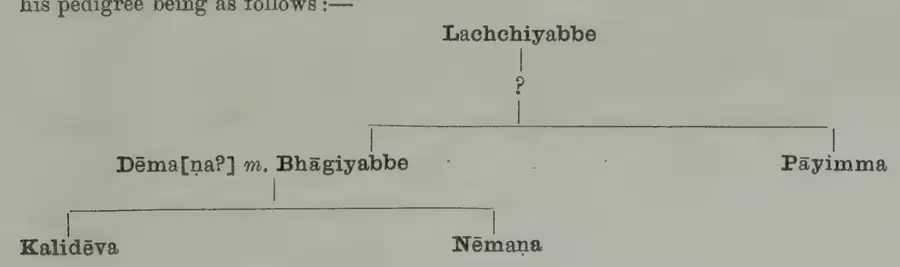
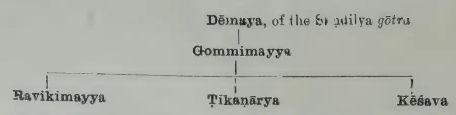
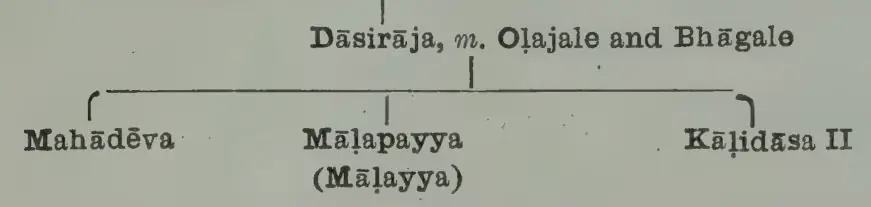
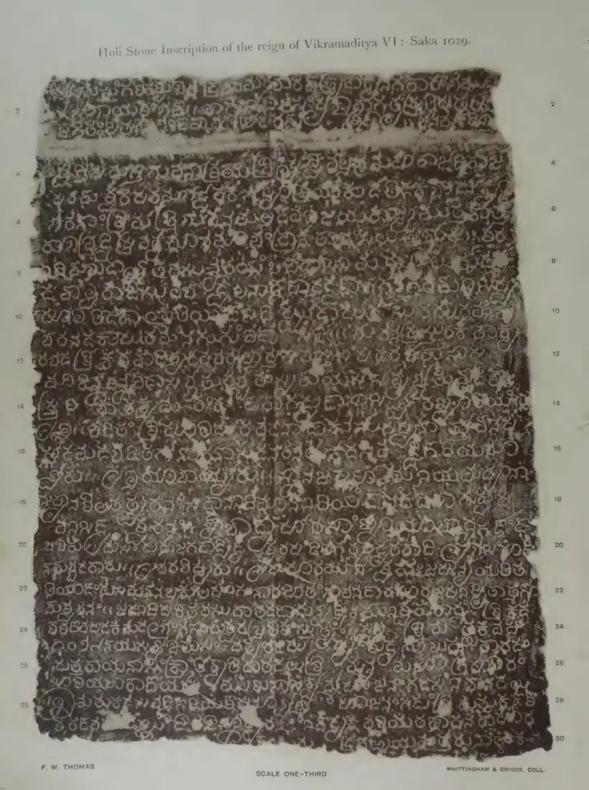
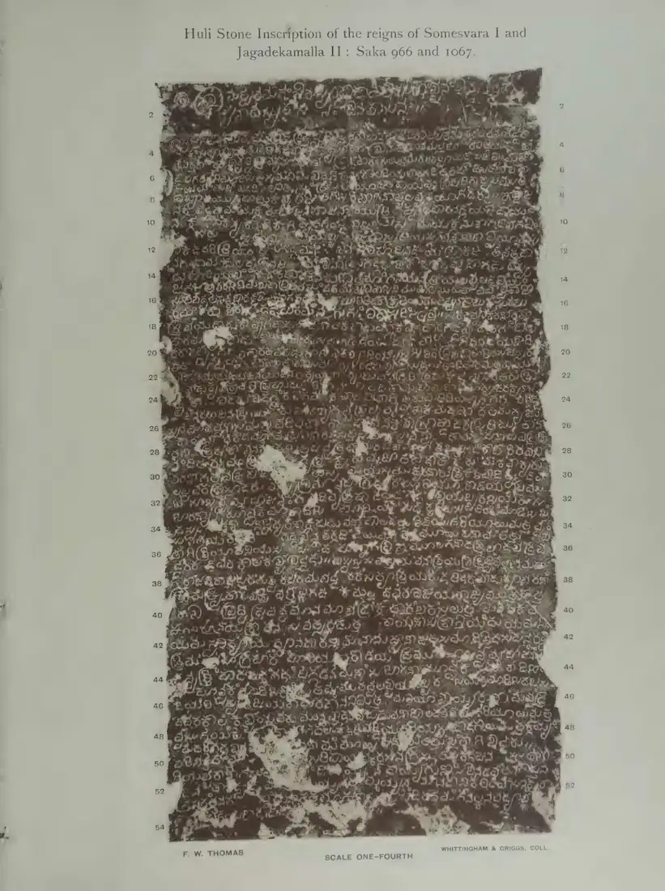

Inscriptions of Huli
No. 22.—INSCRIPTIONS OF HULI.
The village of Hūli, anciently termed Pūli, lies in circa long. 75° 14', lat. 15° 47½',1 about five miles east-by-north of Saundatti, the chief town of the Parasgađ Taluk of the Belgaum District. It was formerly a town of considerable importance, and was one of the “Eighteen Agrahāras” (Dynasties of the Kan. Distr., p. 443n.), as some of its inscriptions testify. In his Archaeological Survey of Western India: Report of the First Season's Operations (1874), pp. 12-14, Dr. Burgess has given an account of its chief architectural remains; and in 1882 the late Dr. Fleet made a survey of its epigraphic records, as a result of which a number of ink-impressions were prepared for him, which are now in the possession of the Trustees of the British Museum.2 Of this collection the texts published below are the most important. Their provenance is as follows :—
A (a vīra-gal), of A.D. 985, from the north of the Bhīmēśvara or Andhakēśvara temple.
B (Jain), of A.D. 1044-45 and 1145, from the temple of Vīrabhadra.
C (Vaishṇava), of A.D. 1082; from the same temple.
D (of the cult of Harihara), of A.D. 1097, from the same temple.
E (Śaiva), of A.D. 1104, 1162, 1184, and 1224, from the temple of Madanēśvara.
F (Śaiva), of A.D. 1107, from the temple of Kere-Siddhappa.
G (a vīra-gal), of A.D. 1107, from a site north of the Bhīmēśvara temple.
H (Jain), date lost, from the Pañcha-linga temple.
I-J (Śaiva), from the same temple.
K. (Śaiva), from the Bhīmēśvara temple.
L (Vaishṇava), of A.D. 1162; from the Virakta-maṭha.
M (Vaishṇava), of A.D. 1162, from the Agastyēśvara temple.
Of these temples the largest is the Pañcha-linga, on which see Burgess, First Arch. Report, pl. xv and xvi. Burgess attributes it to about A.D. 1100. It was originally Jain, as is shown by the figure of a Jina on the lintel, and by some Jain inscriptions, one of which, carved over the lintel of a door, records some building executed by the lay-disciples of Prabhāchandra Siddhāntadēva in the Śaka year (lapsed) 114[2], corresponding to the cyclic year Vikrama, i.e. A.D. 1220-21. Now, as the name implies, it has been converted to the service of the Śaiva cult. The temple of Vīrabhadra is a modern and insignificant building near the tank, which lies on the north-east of the village. That of Bhīmēśvara, which the villagers seemed inclined to call Andhakēśvara, lies on the north of the village, in Survey No. 693. It was already partially ruined in 1882, and was covered by a rank growth of prickly pear. It is in the Dravidian style, without porch, and contains two shrines, one at the east end and one at the west. The temple of Madanēśvara, as the villagers call it (it is termed Andhakēśvara by Sir Walter Elliot, but the inscriptions call it the temple of Andhāsura), lies to the north of the village, a little way up the hill, in Survey No. 688. It is a Śaiva sanctuary of the Dravidian order, containing a porch, open maṇṭapa, and shrine with liriga. The Agastyēśvara is a sandstone temple, situated on the eastern bank of the Nāgara Bhāvi, a well or small tank on the north of the tank marked in Survey No. 694; it is of the Dravidian order, and consists of a porch (now ruined), walled maṇṭapa, and shrine with linga. The temple of Kere-Siddhap
1 This is the situation according to the Bombay Survey sheet No. 305, where it is entered as “Kasba Huli.” In the Indian Aslas sheet 41 (1852), where the name is spelt “Hoolee,” it is a little further towards the east.
2 To the same departed friend I owe drafts of the texts, which have greatly lightened the labour of making my own transcripts, and some notes on the archaeological remains of Hūli.
pa, or “Siddhappa of the Tank,” stands on the eastern side of the tank marked in Survey No. 694, towards the north-east of the village. It is of sandstone, of the Dravidian order, containing a shrine with liṅga, walled mantapa, and porch (now in ruins). The Virakta-maṭha is (or was) a building in the north-eastern part of the village, which served for lodging ascetics.
The Elliot Collection (Royal Asiatic Society's copy) contains transcripts of nine of these inscriptions: D. is given in vol. 1, fol. 233a, E. ib., fol. 284b, F. ib., fol. 307a, G. ib., fol. 306b. H. ib., fol. 412a, I. in vol. 2, fol. 374b, J. ib., fol. 374b, K. ib., fol. 375a, and M. ib., fol. 11a. As usual, these transcripts leave much to be desired.
A.—OF THE REIGN OF TAILA II : SAKA 907.
The following inscription is incised upon a black stone which was found to the north of the Bhīmēśvara or Andhakēśvara temple, on the west bank of the Akkataṅgēra-bhāvi, in Survey No. 693. The slab was set in a base, and was 5 ft. 2 in. in height and 2 ft. 1 in. broad. It was a vīra-gal, or hero's monument, and in accordance with the usual practice was divided into horizontal compartments, four containing sculptures and three writing. Of the sculptures I have been unable to obtain particulars. The first compartment of the writing (about 5 high) contains ll. 1-4, the second (about 3 high) ll. 5-9, the third (about 2 high) ll. 10-11. The inscription is fairly well preserved, and is in good Kanarese script, with letters between and in height. The special form of y noted above, Vol. XII, p. 336, seems to occur in bhandiy=, l. 3.—The language is Old Kanarese: ll. 1-4 are in prose, and then come three verses. The forms are those of a transitional period: thus we find the short accusative and1 genitive, the locative in -oļ (ll. 5-8, 10), and the verbal forms irdan (l. 5), ildan (l. 7), sandar (l. 4), beside the archaic verbal forms āntoran (l. 5) and kūđidon (l. 8). The word eltus apparently the original of the later ettu, seems to occur in bhandiy=eltam, l. 3. The ļ i not preserved, except in negalda (ll. 8-9).
The record is of the usual type of vīra-gal. It announces that on a certain date Dadda payya, a pergađe or official in the service of Sōbhanayya, made a raid upon Pāli, whereupon Kendara Kēta, Eřeviṭta, and Tambada Kēta attacked his party, slew the leader, his horse, and three of his men, and died the death of heroes. Verses 1-2 (ll. 5-9) eulogise Kendara Kēta; the mutilated and obscure verse 3 mentions a certain Kendara Maṛasiṅga as dying heroically in battle.
The date of this record is: Śaka 907 expired, the cyclic year Pārthiva; the full moon of Chaitra; Budhavāra, or Wednesday (ll. 1-2). These details are slightly irregular: the tithi Chaitra šukla 15 of the given year corresponded to Monday, 9 March, A.D. 985, on which day it ended about 16 h. 47 m. after mean sunrise, and it cannot have been connected with the Wednesday.1
The only place mentioned is Pāli, i.e. Hūli (l. 2).
TEXT.2
[The metres are: verse 1, Mattēbha-vikriđita; verse 2, Kanda. The fragmentary verse 3 may possibly be a Dvipada.]
- 1 © Svasti [*] Sa(ś)ka-nṛipa-kāl-ātita-saṅvatsaraṅga3 907neya Pārtthiva-saṅvatsarada
- 2 Chaitrada puṇname Budhavāradandu Sōbhanayyana perggađe Daddapayyam Pūliya po-
1 I am indebted to Mr. R. Sewell for the verification of my calculations of this and the other dates in the present paper.
2 from the ink-impression.
3 Abbreviated for saṅvatsara-šataṅgal.
3 lada bhaṇḍiy1=eļtam kemman=akārapam koṇdu pōge Kendara Kētanum Eřeviṭ-tanum Tambada
4 Kētanum parichchē(chchhē)dain-geyda mūvarum mēl-āļun kudureyuma[m*] kondu mōkshakke sandar [||*]
5 Duradoļ=kāydu kađamgi pongi maled=ōr-ant=iřdan=eytanda2 machcharadind=āntoran=Anta-
6 kaing=idađ[e*] kol-chand=ikki mikk=i vasun[dh]areyoļ=tan[n]=adaṭum patāpamum=ad=ā rāj-ōttamań pe[r]chchi3
7 Kendara Kēta[in*] vara-Vāsav-ā[m*]ganeyaro! kūđ-iļdan-ā svarggado! || [1*] Tōđum bīđum=ad=uđuga-
8 de pāđ=ařid=echch=āji-raingado! vājiya[n]=aļk-āđi sur-ā[m*]ganeyaroļam kūđidon=ēń kaliye nega-
9 ļda Ken[dara Kētań ||] [2*]
10 Si[m]gam=ibhaingaļań nuguv=ante4 tara5 . . . gi saingado! kaļida Kendara Mařasim-
11 gań me . . . . . ń ganđan=adaṭanō || [3*]
TRANSLATION.
(Lines 1-4.) Hail ! On Wednesday, the full-moon day of Chaitra of the 907th (year) of the centuries elapsed from the time of the Šaka king, the cyclic year Pārthiva, when Sōbhanayya's officer Daddapayya without right or reason was carrying away the cart-oxen(?) of the fields of Pūli, Kendara Kēta and Eřeviṭta and Tambada Kēta, slaying the three men forming the division, the leader, and his horse, attained salvation.
(Verse 1.) He stood worthily fighting in the fray, burning, striving, boiling : when, advancing,6 with indignation he despatched his adversaries to the Death-god, exercising the opportunity for slaughter (?), his prowess and majesty were extraordinary on this earth; and this noble prince becoming great, Kendara Kēta was united in paradise to Indra's goodly damsels.
(V. 2.) Shooting on the stage of battle his arrows with understanding of the right manner, so that the fitting (of the shafts on the bow-string) and their discharge did not slacken, when he was exhausted he espoused the celestial ladies : what a hero is the illustrious Kendara Kēta !
(V. 3.) As a lion crushes elephants . . . Kendara Mařasimga, who passed away in battle . . . what a man of valour and spirit !
B.—OF THE REIGNS OF SOMESVARA I AND JAGADEKAMALLA II:
SAKA 986 AND 1067.
SAKA 986 AND 1067.
This record is carved on a black stone set upright in the ground against the outside of the western face of the Virabhadra temple (see above). The stone when found was 4 ft. 7 in. high and 1 ft. 8 in. wide. The upper compartment, which was rounded on the top, contained sculptures, viz., in the centre, a squatting Jina facing to the front, with a cow and calf on the proper right and a scimitar on the left, while above these was the sun (to left) and moon (to right). The inscribed area below this is 3 ft. 1 in. high and 1 ft. 7½ in. wide.—The character is Old Kanarese, the average height of the letters in ll. 1-2 being from in. to in.
1 The y is uncertain.
2 Perhaps to be corrected to eytandu.
3 For perchche?
4 The e is not quite clear.
5 The t is somewhat uncertain : it is written very small, below the line.
6 Reading eytandu for the eytanda of the stone.
and in l. 3 from in. to in., after which it increases gradually to between in. to in. It is a fairly good type of the script used in the middle of the 12th century A.D. (see below).—The language is throughout Old Kanarese, verse and prose, with the exception of the introductory Sanskrit verse. The l is not preserved: instead we find l in ēļgeyarin (l. 12), pogaļut (l. 13), podaļda (l. 16), nāļke (l. 16), pēļu (l. 20), pēļ (l. 54), and on the other hand r in erdda (l. 6) and negardda (ll. 12, 18). On the instrumental artthiye (l. 14) see above, Vol. XIV, p. 27, n. 9. Of some lexical interest are the words chaṭta-samaya (l. 9), (?) āyavana (l. 9), limċad-aṅka-pālaka (l. 14), and adṭa-chinna (ll. 35, 49).
The record is a double one, containing two endowments, the first of which is dated in Śaka 966 and the second in Śaka 1067. It was actually written in its present form in the latter year, as is proved by the absence of comminatory formulæ and the character of the script. The first part refers itself to the reign of Āhavamalla (Sōmēśvara I) in ll. 3-5, and then proceeds to celebrate in verse his feudatory Kālaḍiya Bōlāgaḍi (or Bōdēgīḍi), the governor of a Ninety-six district, whose son Pāyimma married Hammikabbe and by her had two daughters, Bhāgenabbe and Lachchale or Lachchiyabbe. Lachchale married a governor of the Kūṇḍi Three-thousand, and was a generous benefactress of religion (ll. 5-15). After some verses in praise of Pūli and the thousand Brāhmaṇ burgesses of that town (ll. 15-20) comes a prose statement that these burgesses sold to Lachchiyabbe an estate, on which she constructed a Jain sanctuary, assigning certain lands for the maintenance thereof, and appointing as trustee Bālachandra-Bhatṭārakadēva (ll. 20-37). Then begins the second document (ll. 37-54), which announces that in the reign of Jagadēkamalla (II) a local pergađe named Nēmaṇa or Nēmayya, having purchased some land from the burgesses of Pūli, made a further endowment to the same sanctuary for the maintenance of the ascetics residing in it, the trustee being a certain Rāmachandradēva. This Nēmaṇa was a great-grandson of the above-mentioned Lachchiyabbe, his pedigree being as follows:—

The document then ends somewhat abruptly, without any concluding formulæ.
This record, being twofold, contains two dates. The first is given on ll. 20-22 as: Śaka 966 expired, the cyclic year Tāraṇa, Pushya śuddha 10, Ādivāra (Sunday), the úttarāyaṇa-saṅkrānti. These details have been recently examined by Mr. A. Venkatasubbiah in Some Śaka Dates in Inscriptions, p. 129, who remarks as follows: “Tāraṇa by the northern luni-solar system=Ś. 966=A.D. 1042. In this year, śu. 10 of the lunar month Pushya ended at 44 gh. 21 p. after mean sunrise on 24th December, on which day, the Makara-saṅkrānti occurred at 14 gh. 38 p. after mean sunrise according to the Sūrya-Siddhānta. The week-day however was Friday and not Sunday. In the solar month Pushya, i.e. Makara or Tai, [Māgha-]śu. 10 ended at 11 gh. 36 p. after mean sunrise on Sunday, 23rd January, A.D. 1043. The [Kumbha-]saṅkrānti, which occurred at 41 gh. 32 p. (S.S.) after mean sunrise on the preceding Saturday, fell, i.e. was observed, on this Sunday. This day, therefore,—Sunday, 23rd January, A.D. 1043—is the regular equivalent of the given date.”1
1 Kielhorn in his List of Southern Inscriptions (above, Vol. VII, App., No. 159) gives as the equivalent Sunday 23 December, A.D. 1044. [But the tithi ought to be the first and not the 10th; see Ind Ant. Vol. XXIV, p. 6, No. 148.—Ed.].
The second date is given on ll. 40-41 as: Śaka 1067 (expired), the cyclic year Krōdhana, the uttarāyaṇa-saṅkrānti. Naturally this cannot be verified. The saṅkrānti took place 20 h. 45 m. after mean sunrise on Monday, 24 December, A.D. 1145, and 1 Makara was accordingly reckoned as corresponding to Tuesday, 25 December.
The places mentioned, besides Pūli, are Kūṇđi (l. 14), the Beļvala-nāđu (l. 16), Šiveyagēri (ll. 34, 47), Kaļasavaļligēri (l. 48), and a nameless Ninety-six district (l. 6). For Belvala see above, Vol. XIII, p. 40. On the Kūṇđi Three-thousand see I. A., Vol. XXIX, p. 278. The other places I am unable to identify. Kaļasavaļligēri was a parish (kēri) in Pūli.
TEXT.1
[The metres are as follows: verse 1, Anushṭubh; verses 2, 3, and 8, Kanda; verse 4, Utpala-mālā; verses 5 and 6, Champaka-mālā; verses 7 and 9, Mattēbha-vikrīđita.]
- 1 © Šrīmat-parama-gam̂bhira-syādvād-āmōgha-lām̂chcha(chchha)nam̄ [|*] jiyā[t*] trailō-
- 2 kya-nāthasya śasanam̄ Jina-śasanam̄ || [1*]
- 3 © Svasti [|*] Samasta-bhuvan-āśraya Šrī-Pṛithvi-vallabba mahārājādhirāja paramēśvara paramabhaṭtāra-
- 4 kam̄ Satyāśraya-kuļa-tiļakam Chāļuky-ābharaṇam̄ śrimad-Āhavamalladēvara vijaya-rājya-
- 5 m=uttar-ōttar-ābhivṛiddhi-pravarddhamānam=ā-chaṅndr-ārkka-tāram̄ saluttam=ire || Tat-pāda-padm-ōpajīvi || Mēl-e-
- 6 rdda2 pagevaram̄ nirmmūli(li)si jasamam̄ nimirchchi dig-bhitti-varam̄ Kālađiya Bōlagađi3 tale4 pāli(li)sidam̄ Tom̂bat-ā-
- 7 ṛumam̄ bhuja-baļadim̄ || [2*] Ātana putram̄ vinay-ōpētam̄ Pāyim̂ma-nri(nri)patig=oppuva sati
- 8 vikhyāti-yute Hammikabbege Sitege sari Bhāgeṇabbe Lachchaley=ogedaru || [3*] Ishṭta-ja-
- 9 nakke chaṭta-samayakke mahājana-bhōjanakkey=utkri(kri)shṭta-tapōra(dha)narggey=alīd=āyava-
- 10 nakke sa-kaṅnyak-āļik-a(ā)gnishṭtageg=eyde nālku-samayakk=anurāgade bēgav5=iṅ-
- 11 tu saṅtushṭate Lachchiyabbarasig=ār=ssati(ri)yar=ssa-char-āchar-ōrvviyo!u || [4*]
- 12 Sakaļa-dharitriyo!=negardda(lđa) varndi-janam̄ sale rūpin=ēlgeyam̄ prakaṭate-vetta dā-
- 13 na-guṇamam̄ kuļad=uṅnatiyam̄ Jin-āṅghrigal̄g=akuṭiļa-chittamam̄ pogaļut-i[r]ppu-
- 14 du Kūṅđiya 6līnkad=aṅnka-pāļakana kuļ-ōttam-āṅganeyan=artthiye Lachchaladēvi-yam̄
- 15 jagam̄ [ ∄ 5*] © Šaranidhi-mēkhaļ-āvri(vṛi)ta-vasuṅndharey=eṅnba vilāsinī-mukh-āṅburuhava(da)vōl=virāji-
- 16 suva Beļvaiā-nālke(lge) podaļda śōbheg=āgaram=eni[s-i]rppa Pūli tiļak-ākri(kri)-tiyiṅnd=esed-irppud=ā puram̄ sura-pu-
- 17 ramam̄ Kubāran=Aļakāpuramam̄ nagugum̄ vilāsadim̄ ∄ [ 6*] Alli || Sakaļa-vyākaraṇ-ārttha-śā-
- 18 stra-chayado!u kāvyaṅgalō!u saṅnda nāṭakado!u varṇṇa-kavitvado!=negardda(lđe) vēdāṅntarṅgalō!u
- 19 pāramā[rt]th[ika]do!u lauki[ka]do!u samasta-kaļeyo!u Vāgiśaniṅdam̄ yaśō-dhi-
1 From the ink-impression.
2 i.e., eļda.
3 Or possibly Bōdagađi.
4 For sale?
5 Or possibly chēgav=.
6 [The akṣhara li looks like bi on the plate—Ed.]
20 kar=ādar=ppogaļva'lig=ār=aļave pēļu sāsirvvara khyātiyam || [7*] Svasti Šaka-
nri(nri)pa-kāļ-ātīta-sainvatsara-
21 šatamgaļu 906neya Tāraņa-sainvatsarada Pusya-sudhdha1 10 Ādivāram-
a(u)ttarāyana-
22 sainkrāntiyaindu || Yajana-yājana-adhyayan-ādhyāpana-dāna-pratigraha-shaṭ-karmma-
niratarum śri-
23 [ma]ch-Chāļukya-chakravartti-Brahmu(hma)puri-sthānam (na)- pitṛri-pitāmaha - mahim-ās-
pada-rakhshaṇ-ā-
24 rttha-kōvidarum vidagdha-kavi-gamak [i*]-vādi-vāgmitvarum=atithiy-abhyāgata-viśishṭa-
jana-pūjana-priyarum Hiraṇyagarbhbha-Brahma-mukha-kamaļa-vinirggata-Ru(Ri)g-Yaju-
s-Sām-Atharvvaṇa-samasta-vēdi(da)-vēdārng-ōpārng-ānōka-śāstr-āshṭādaśa-smri (smṛi)ti-pu-
rāna-
27 kāvya-nāṭaka-dharmm-āgama-praviṇarum sapta-sōma-samśth-āvabhṛit(th)-āvagāhana-
pavitrikri(kṛi)-
28 ta-gātrarum kāmchana-ka[la]śa-sita-shaṭ-chhatra-chāmara-pamcha-mahā-śabda-ghaṭikā-
bhēri-rava-ni-
29 nam (nā)ditarum=āśri[ta-jana]-kaļpa-vri(vṛi)ksharum=ahita-Kālāintakarum=ēka-vākyarum
30 śaraṇ-āgata-vajra-pa[m]ja[rarum cha]tus-samaya-samudhdharaṇarum śri-Kēśavāditya-
dēva-
31 labdha-vara-prasādarum=appa śriman-mah-āgrahāram Pūliy=ūr-ođeya-pramu-
32 kha sāsirvvar=mmahājanaingaļa divya-śri-pāda-padmamingaļam [La]chchiyabbarasiyaru
sa-
33 hiraṇya-pūrvvakam=ārādhisi bhūmiyam pađedu basadiyam māḍisi kham-
34 đa-sphu[tī]ta-jirṇ-ōdhdharaṇakke pađuvaṇa poladalu Šiveyagēriy=āru-mattar=vva-
35 sugeyam ma[t]taring=ađđa-chinna-lekkadiind=aru-vaṇamam mūru paṇamam tett=
uñb=aīn-
36 t=āgi śri-Yāpaniya-samghada Punnāgavri(vṛi)ksha-mūla-gaṇada śri-Bāļachamdra-Bha-
37 ṭtārakadēvara kālam karchchi biṭṭaļu || Svasti [ 1* ] Samasta-bhuvan-āśraya
Śri-Pri(pri)thvi-vallabha mahā-
38 rājādhirāja paramēśvara paramabhaṭṭārakam Satyāśraya-ku'a-tilakam Chāļuky-
ābharaṇam
39 śrimat-pratāpa-chakri(kra)vartti Jagadēkamalladēvara vijaya-rājyam=uttar-ōtta-
40 r-ābhivri(vṛi)dhdhi-pravardhdhamānam=ā-chaīndr-ārkka-tāram baram saluttam=ire [|*]
Šaka-va-
41 rsha 1067neya Krōdhana-sainvatsarad=uttarāyaṇa-sainkrāntiyaindhu(du) yama-.
ni-
42 yama-svādhyāya-dhyāna-dhāraṇa-mō(mau)n-ānushṭhāṇa(na)-japa-samādhi-śīla-
sainpainnar=appa
43 śrima[n]-mah-āgrahāram Pūliy=ūr-ođeya-pramukha sāsirvvar=mmahājanainga[la]
44 divya-śri-pāda-padmamingaļam perggađe Nēmaṇam sa-hiraṇya-pūrvvakam=ārādhisi
[dhā]-
45 [rā]-pūrvvakam māḍisi kom[đu] tamma mu[t*]tavve Lachchiyabbarasiyaru
māḍisida basa-
46 diyal=irppa ri(ṛi)shiyar=āhāra-dāna-nimittam=alliy=āchāryyaru Rāmachaīndra-
47 dēvara kālam karchchiy=avaru munnav=āļuva pađuvaṇa polada Šiveyagēriy=
āru-matta-
48 r=vvasugeyim pađu[va]pa [bhā]gadalu Kałaśava!liyagēriya1 sthā[na]d=ołag=āru mattar=
kkeyyań
49 mat[t*]aring=adđa-chinna-l[ekkadiind=aru]-vaṇamań mūru paṇamań tett=uńb=ańt=
āgi biṭṭaru ||
50 Pati-bhakte Dhē(Dē)ma . . . sati Pāyimmarasan=agra-sute sakała-jana-stute
Bhā-
51 giyabbe-rānige sut . . : . īnd=I [Nēma]yyan=audāryya-guṇań { [ 8*]
Jina-dēvań tanag=āptan=a-
52 [rtthi]-janatā-kalpa-druma[īn— ◦ —]yyane tamm=ayyan=anūna-dāni Kalidēvań
s-ākshar-ā-
53 grēsarań tanag=aṇṇań guṇa-ratna-bhūshaṇan=e[—] saind-irda Nēmańg=enalk-
anavady-ācha[raṇań]-
54 ge bhū-valē(ła)yado!u pē! [— ◦ — — ◦ —] || [9*]
TRANSLATION.
(Verse 1.) Victorious be the teaching of the Lord of the Three Worlds, enjoined by the Jinas, which bears the infallible token of the blessed and supremely profound doctrine of alternatives !
(Lines 3-5.) When the victorious reign of—hail !—the asylum of the whole world, favourite of Fortune and Earth, great Emperor, supreme Lord, supreme Master, ornament of Satyāśraya's race, embellishment of the Chālūkyas, king Āhavamalla, was advancing in a course of successively increasing prosperity, (to endure) as long as moon, sun, and stars :—
(L. 5.) One who finds his sustenance at his lotus-feet—
(V. 2.) Uprooting high-rising, foes, spreading abroad his fame as far as the walls of the sky-quarters, Kālaḍiya Bōłagađi perfectly (?) protected the Ninety-six by the might of his arm.
(V. 3.) To the renowned Hammikabbe, the distinguished wife of his son the cultured prince Pāyimma, a peer of Sitā, were born Bhāgeṇabbe and Lachchale.
(V. 4.) In the chaṭta-samaya2 of agreeable persons, in the feeding of Brāhmaṇ householders, in (the supply of) measured spoons3 to distinguished ascetics, in (furnishing) fire-places with rows of maidens, indeed, the four churches4 straightway were delighted with affection : who are equal to Lachchiyabbarasi on the earth with its stock of living and lifeless things ?
(V. 5.) While illustrious eulogists are active over the whole earth, the world with joy praises for excellence of beauty, eminent generosity, distinction of race, and sincere devotion to the Jinas' feet Lachchaladēvi, the exceedingly high-born wife of the limċad=aṅka-pālaka of Kūṇđi.5
1 Read Kałaśava!ligēriya.
2 This phrase is obscure. It seems most probable that chaṭta is to be taken as a derivative of Sanskrit shaṭ (cf. Tamil saṭṭa-varggam). Six samayas (schools of religion or philosophy) are often mentioned. The Śaivas recognise as orthodox the Bhairava, Vāma, Kālāmukha, Māhāvrata, Pāśupata, and Śaiva samayas, and as unorthodox the Lōkāyatas, Buddhists, Jains, Mimāṁsakas, Pāñcharātras, and Bhāṭṭāchāryas. Another group is: Buddhists, Jains, Bhairavas, Kālāmukhas, Lōkāyatas, and Śūnyavādins. Six Vaidic samayas are recognised, viz. Śaiva, Vaishṇava, Śākta, Saura, Gāṇapata, and Kaumāra ; and there are six Vēdāntic samayas, viz. Kāpila, Kāṇāda, Pātañiala, Ākshapāda or Nyāya, Vaiyāsa, and Jaiminiya. The Vaishṇavas admit 6 samayas as orthodox, viz. those of Śaṅkara, Yādava Miśra, Rāmānuja, Madhva, Bhāskara, and Hiraṇyagarbha
3 The reading here is certain, but the division and sense are not. Āyarana is a rare Atharva-vedic word explained as “stirring-spoon” ; but here it seems to have another meaning.
4 The four samayas are the Māhēśvaras, Vaishnavas, Buddhists, and Jains.
5 I can only conjecture that limċka is connected with leṅka, “servant,” and that aṅka is used in the sense of “war” cf. aṅkakāṛa ; the phrase would then mean something like “Commander of the military forces of Kūṇđi” [See foot-note 6. p. 174, above—Ed.].
(V. 6.) Pūli, which is indeed a site of conspicuous charm, appears with the aspect of a beauty-spot upon the county of Beļvala, which is radiant like the lotus-face of that fair lady the ocean-girdied earth. This town by its bright appearance laughs to scorn the city of the Gods and Kubēra's city of Alakā.
(L. 17.) In this (town)—
(V. 7.) In the series of all grammars and treatises on economic science, in poems, in goodly drama, in panegyric poetry, in the illustrious Upanishads, in transcendental and secular lore, in all arts, they have become superior in glory to the Lord of Speech [Brahman]: say, who are equal to praising the renown of the Thousand?
' (Ll. 20-22.) Hail! on Sunday, the occasion of the uttarāyaṇa-saṅkrānti, being the 10th of the bright fortnight of Pushya in the cyclic year Tāraṇa, the 96th of the centuries elapsed since the time of the Śaka king:—
(Ll. 22-23.) Lachchiyabbarasi, having adored with (offering of) gold the divinely blest lotus-feet of the Thousand Mahājanas, headed by the mayor, of the great Agrahāra of Pūli, who are constant in the six duties of sacrifice by themselves and by others, study, teaching, alms-giving, and acceptance (of charity),1 skilful for the purpose of maintaining the rank of honour of father and grandfather at the establishment of the Chālukya Emperor's Brahmapuri,2 accomplished as wits, poets, reciters, disputants, and rhetoricians, fond of serving guests, visitors, and men of culture, versed in all the Vēdas, the Rīk, Yajus, Sāma, and Ātharvaṇa, which have issued from the lotus-mouth of Hiraṇyagarbha-Brahman, and in the Vēdāngas, the subsidiary sciences, all books of teaching, the eighteen sacred law-books and Purāṇas, poems, drāmas, and traditional rules of religion; whose bodies are purified by plunging in the baths of the seven sōma-saṅsthās3; who are (honoured) with golden pitchers, six white parasols, and yak-tail fans and saluted with the five great musical sounds, gongs, and drums; who are trees of desire to clients, Kālāntakas to adversaries, uniform of speech, adamant chambers to refuge-seekers, restorers of the four churches,4 and recipients of the grace of boons from the god Kēśavāditya,
(Ll. 33-37.) and having obtained (from them) land and constructed a sanctuary, laved the feet of Bālachandra-Bhaṭṭārakadēva, of the Punnāgavṛiksha Mūla-Gaṇa in the Yāpanīya-Saṅgha, and granted for the restoration of broken, burst, and outworn (buildings) six mattar of vasuge5 at Śīveyagēri in the western field, to be enjoyed on payment of an aru-vaṇa6 of three paṇas, at the rate of half a gold piece on each mattar.
(Ll. 37-40.) When the victorious reign of—hail!—the asylum of the whole world, favourite of Fortune and Earth, great Emperor, supreme Lord, supreme Master, ornament of Satyāśraya's race, embellishment of the Chālukyas, the august Emperor Jagadēkamalladēva, was advancing in a course of successively increasing prosperity, (to endure) as long as moon, sun, and stars:—
(Ll. 40-41.) on the occasion of the uttarāyaṇa-saṅkrānti in the Śaka year 1087, the cyclic year Krōdhana,
(Lines 41-49.) the sheriff Nēmaṇa, having adored with (offering of) gold the divinely blest lotus-feet of the thousand Mahājanas, headed by the mayor, of the great Agrahāra of Pūli, who practise the major and minor disciplines, scriptural study, spiritual concentration, observance of
1 See Manu, i. 88.
2 A quarter for the residence of Brāhmaṇs in connection with a temple.
3 These rites are enumerated in Ep. Carn., Vol. VII. i. Sk. 74.
4 See above, on v. 4 of this inscription.
5 See Kittel, s. v. hasige, and above, Vol. XIII p. 37.
6 The aru-vaṇa is a quit-rent for tenancy of land in connection with a religious establishment; here it amounted to paṇa per mattar, in all amounting to 3 paṇas.
the vow of silence, prayer, and absorption, and having arranged for purchase with pouring of water, for the purpose of furnishing food for the Rīshis resident in the sanctuary constructed by his great-grandmother Lachchiyabbarasi, laved the feet of Rāmachandradēva and granted six mattar of meadow in the grounds of Kaļasava!ligēri, in the part west of the six mattar of vasuge in Šīveyagēri in the western field formerly under his seigniorage, to be enjoyed on payment of an aru-vaṇa of three paṇas, at the rate of half a gold piece per mattar.
(V. 8.) This Nēmayya, illustrious in virtues, is . . . son of the universally praised Bhāgiyabbe-rāni, the chaste wife of Dēma . . . and elder sister of Pāyimmarasa.
(V. 9.) As the Lord Jina is his friend, that tree of desire to the needy . . . his father, Kalidēva the unstintingly bountiful and foremost among men of letters his elder brother, say, [who is equal] to Nēma, who is adorned by the jewels of virtue . . . and is blameless of conduct, on the circling earth ?
C.—OF THE REIGN OF VIKRAMADITYA VI: THE 7TH YEAR.
This inscription is on a black stone built into the western wall inside the temple of Virabhadra, at its north-western corner. The stone itself was 4 ft. 11 in. high and 2 ft. 2½ in. broad. On the upper compartment, which was rounded, were the following sculptures: in the centre a standing figure of Vishṇu, facing full front; to the proper right of this, a kneeling Garuḍa, facing half towards Vishṇu and half towards the front; to the left of Vishṇu, a cow with calf; above these, the sun (on left) and moon (on right). There may have been some other details concealed under the coating of chunam upon the stone. Under this is the inscribed area, 3 ft. 3 in. high and 2 ft. 2½ in. wide.—The character is Kanarese of the period, a fine ornamental hand with a tendency towards flourishes. The letters, which are generally well preserved, are from in. to in. high.—The language, with the exception of the formal Sanskrit verses 1, 12, and 13, is Old Kanarese. Initial p is preserved. The archaic l remains in negaldar (l. 22) and negalda (l. 23), where the vowel before it is metrically short; on this point I may refer to my observations above, Vol. XIII, p. 327. On the other hand, l is changed to l in alīdaṅge (l. 15), bīlguṅ (l. 17), bēlpadav = (l. 26). The double l in Shāṇdīllya, for Šīṇdīlya, (l. 21), is worth notice: cf. Pāṇini VIII. iv. 47, Siddhānta-kaumudī 48.
The record, after referring itself in ll. 2-5 to the reign of Tribhuvanamalla (Vikramāditya VI), gives in ll. 5-11 details of an endowment, consisting of certain lands, which were purchased by Kisuvāyara Ravikimayya-Nāyaka, a distinguished member of the Hundred Brāhmaṇ burgesses of Raviyaṇagēri (a subdivision of the Thousand burgesses of Pūli), for the upkeep of a temple of Vishṇu which he had built. After some hortatory matter in prose (ll. 11-14) and verse (ll. 15-17) the author proceeds to celebrate in verse Bēļvala, Pūli, the Thousand Brāhmaṇs of Pūli, the Hundred of Raviyaṇagēri forming a part of them, the family of the donor, and the latter personally (ll. 17-30). The pedigree is as follows:—

The date of this record is given on ll. 4-5 as: the 7th year of the Chālukya-Vikrama era, the cyclic year Dundubhi; the uttarāyaṇa-saṅkrānti. The saṅkrānti in question
occurred on Sunday, 25 December, A.D. 1082, at 13 h. 38 m. after mean sunrise, and 1 Makara was accordingly reckoned as corresponding to the following Monday.
The places mentioned, besides Pūli and the tīrthas in l. 15, are Raviyaṇagēri (ll. 9, 20), the Beļvala-nāđu (l. 17), Bhatṭara-koļa or “The Bhatṭtas' Lake” (l. 11), and Kalkuṭigagere or “The Stonemasons' Tank” (l. 11). On Beļvala see above, Vol. XIII, p. 40. The other places seem to have been in or about Pūli, and can no longer be traced; Raviyaṇagēri was a parish (kēri, literally “street”) of Pūli, as will appear below.
TEXT.1
[The metres are as follows: verses 1, 13, Anushṭubh; verse 2, Mattēbha-vikrīđita; verses 3-9, 11, Kanda; verse 10, Champaka-mālā; verse 12, Šālinī.]
1 Svasti [|*] Jayaty=āvishkritam Vishṇōr=vvārāham kshōbhit-ārppavam [|*]
dakshiṇōnnata-dainshṭr-āgra-viśrānta-bhuvanam vapu[h*] [1*]
2 Svasti [|*] Samasta-bhuvan-āśraya Śrī-Pṛithvi-vallabha mahārājādhirāja
paramēśvara paramabhatṭārakam Satyā-
śraya-kuļa-tiļakam Chāļuky-ābharaṇam śrīmat-Trī(Tri)bhuvaniamalladēvara vijaya-
rājyam=uttar-ōttar-ābhi-
4 vṛiddhi-pravarddhamānam=ā-chamndr-ārkka-tāram saluttam=ire [|*] Śrīmach-
Chāļukya-Vikrama-varshada 7neya
5 Duṅndubhi-saṅvatsarad=uttarāyaṇa-saṅkrāntiyandu | Svasti [|*] Yama-niyama.
svādhyāya-dhyā-
6 na-dhāraṇa-mō(mau)n-ānushṭhāṇa(na)-japa-hōma-samādhi-saṅpannar=appa śrīmad-
agrahāram Pūli-
7 y=ūr-ođeya-pramukha sāsirvvarum śrī-Kisuvāyara Ravikimayya-nāyakam
māđisi-
8 da śrī-Nārāyaṇa-dēvargge dharmm-ābhivṛiddhi-nimitta[m dēva]ra jirṇṇ-ōdhdhāraṇa-
khaṇḍa-sphuṭitakkam snāna-
9 gandha-dhūpa-dīpa-nivēdyakkaṅv=aṅga-bhōgakkam satrakkam Raviyaṇagēriya
nūrvvara kayyo! Ravikima-
10 yya-nāyakam dravya-pūrvvakadim dhārā-pūrvvakam māđisi koṇđu śrī-Nārāyaṇa-
dēvargge Bhatṭta-
11 ra-koļadalli biṭta mattar=āru Kalkuṭigagereyalli paralu mattar=ondu | Iṅt=ī
dharmmamam sarvva-nama-
12 śya(sya)m=āgi sāsirvvarum pratipālisuvar=Idam pratipālisidargge Vāraṇāsi
Kurukshētrav=Argghyatīrttham
13 Prayāge Gayey=eṅba tirttha-sthānaṅgaļo!=mahā-dānaṅgaļam māđida puṇyam-
akkum=iṅt=appudan=aridu sā-
14 sirvvarum dharmm-ōttar-ōttar-ābhivṛiddhiy=app=aṅt=ā-chamndr-ārkka-tāram-baram
pratipālisuvar || Vṛitta ||
1 From the ink-impression.
15 @ Ivan=iy=anidadin=eyde pālisidavaing=isht-ārttha-sainsiddhi sainbhavikurm
koṇd=aļidaṅge Gaṅge Gaye Khē(Kē)dāram Kuru-
16 kshētram=enib=ivaṛol=pēsade pārvvaram goravaram gō-bṛiṅdamam peṇdiram tave
koṇd=ikkida pāpam=eydugum=a-
17 vam bīlgurn nigōdaṅgaļol | [2*] @ Ainbudhi-vṛita-dharaṇige vadaṇam
Beļvala-nād(d)=adarkke tiļakada vōl=chelvam-bīrūva Pū-
18 li-grāmam budha-jana-niļayam=enipud=ā puravaradol || [3*] Amita-guṇ-ānvita-
vipr-ōttamar=ishtā-pūrtta-va-
19 rttanar=ssāsirv var=yyama-niyama-svādhyāya-pramukh-āchārar=ssamasta-dōsha-vidūrar ||
[4*] Avar=olage vēda-śā-
20 stra-pravarar=shaṭ-karmma-niratar=enip=unnatiyiin Raviyaṇagēriya nūrvvar-
bhbhuvanadol=ativiśada-kīrttiyam
21 prakaṭisidar || [5*] Alli || Shā(Śā)ṇṇdillya-gōtra vanaruha-chaṇḍakara[m*]
brahma-vidyeyol=sakaļa-jagan-maṇḍanan=eni-
22 sida peṇp=ola-koṇd-ire Dēmaya-paṇaṅgiyar1=ssale negaļdar || [6*] Avar=
ātnajan=akhiļa-kaļā-praviṇan=animi-
23 tta-bāndhavam Manu-charitam dhavaļa-yaśō-nidhiy=ene peṇpu-vađedu jagad=olage
Gommimayyam negaļda || [7*] @
24 @ Tat-tanujātam śri-Purushōttama-pada-kamaļa-yugaļa-bhṛiṅgam dharmm-
ōdātta-manam vibhu sakaļa-jaga-
25 t-tiļakam Ravikimayyar=amaļa-charitra || [8*] Tad-anujar=asēsha-vibhav-
āspadha(da)r=ishta-viśishta-janake Su-
26 rabhiya vōl=bēlpadav=ittu peṇpu-vađedar=ssad-amaļar=ene Źikaṇāryyanum
Kēśavanum || [9*] Vṛitta || Anupama-
27 kīrttiyam pađeda mūvaroļam prabhu Raikimayyan=olpina kaṇi dharmma-
chittamane bhāvisi chelvina Vishṇu-gē-
28 hamam jana-nutama[m*] paratre(tra)-hitamam bhuvana-tritayakke pūjyam=āyt=ene
kađu-sēvyam=ādud=ene māđisi-
29 d=andam=id=ārgge tī[rttha?]mō || [10*] Vanadhigaļum chaṇdr-ārkkaruv=
animisha-nāgēṇdra-lōkamu[m] vasuratiyum Kanak-
30 mahā[cha]lamu[m*] [u]!!inegam sale nilke Ravikimayyana dharmma || [11*]
Sāmānyō-yam dharmma-sē(sē)tur=nripāṇā[m]
31 k[ālē kā]lē pālaniyō bhavadbhih [||*] sarvvān-ētām(n) bhāgi(vi)nah pārtthivēm-
drām(n) bhūyō bhūyō yāchatē
32 Rā[macham]draṇ [|| 12*] Sva-datt[ā*]m para-datt[ā*]m vā yō harēti(ta)
vasundharā[m*] shashṭir(ṭim)-vvarsha-sahaśrāṇi vishthāyām jā-
33 yatē kṛimih || [13*] @
TRANSLATION.
(Verse 1.) Victorious is the manifested Boar-form of Vishnu that stirs up the ocean and holds the earth at rest upon the tip of his uplifted right tusk.
(Lines 2-4.) When the victorious reign of—hail!—the asylum of the whole world, favourite of Fortune and Earth, great Emperor, supreme Lord, supreme Master, ornament of Satyāśraya's race, embellishment of the Chālukyas, king Tribhuvanamalla, was advancing in a course of successively increasing prosperity, (to endure) as long as moon, sun, and stars:—
(Ll. 4-5.) on the uttarāyaṇa-saṁkrānti of the 7th year of the Chālukya-Vikrama era, the cyclic year Dundubhi:—
(Ll. 5-11.) the Thousand, headed by the mayor, of the Agrahāra of Pūli, who practise the major and minor disciplines, scriptural study, spiritual concentration, observance of the vow of silence, prayer, oblation, and absorption,1 for the purpose of fostering the religious practice of (the temple of) the god Nārāyaṇa constructed by Kisuvāyara Ravikimayya-Nāyaka, for the restoration of outworn (buildings) and (renewal of) broken and burst (masonry) belonging to the god, for baths, perfumes, incense, lights, and oblations, for the personal enjoyment (of the god), and for the choultry, Ravikimayya-Nāyaka made over to the god Nārāyaṇa six mattar at the Bhaṭṭas' Lake (and) one mattar of gravel soil (?) at the Stonemasons' Tank for which he had arranged the purchase with pouring of water and gift of money from the Hundred of Raviyaṇagēri.
(Ll. 11-14.) So the Thousand shall protect this pious foundation as a sarva-namasyc holding. To those who protect it shall accrue the merit of making the great gifts at the holy places of Benares, Kurukshētra, Arghyatirtha, Prayāga, and Gaya; knowing this to be so, the Thousand shall protect it for the continuous increase of religion as long as moon, sun, and stars endure.
(V. 2.) To him who protects (the foundation) duly as it was given by him (who established it) shall befall the fulfilment of the objects of his desire. To him who appropriates and destroys it shall accrue the guilt of downright cold-blooded slaughter of Brāhmaṇs, Goravas2 herds of kine, and women; he shall fall into (degraded) forms of rebirth.
(V. 3.) The county of Beļvala is the face of the ocean-girt Earth. Like a beauty-spot thereon is the town of Pūli, overspread with loveliness; a home of sages there is in this excellent town.
(V. 4.) The Thousand (of Pūli) are noble Brāhmaṇs possessing boundless virtues, active in works of kindness and beneficence, practising the major and minor disciplines, scriptural study, and other duties, far removed from all sin.
(V. 5.) Among them, the Hundred of Raviyaṇagēri, who are eminent in the lore of the Vēdas and devoted to the six practices,3 have displayed to an exalted degree exceedingly brilliant glory on earth.
(L. 21.) Among them—
(V. 6.) As he possessed such eminence as to be called a sun to the lotuses of the Śāndilya gētra, an ornament of the whole world in divine lore, Dēmaya the Shaḍaṅgi4 was truly illustrious.
(V. 7.) His son Gommimayya was illustrious in the world, attaining distinction as one who was expert in all arts, a kinsman without (selfish) object, following the practices of Mant, a treasure of white glory.
1 The construction seems to be an anacoluthon, the subject sāsirvvarum being left as a nominativus pendens.
2 A class of Saiva ascetics.
3 See Mann, i. 88.
4 A master of the six aṅgas or ancillary sciences of the Vēdas.
(V. 8.) His son is the lord Ravikimayya, a bee to the two lotus-feet of the blest Purushōttama, having a soul exalted in godliness, an ornament of the whole world, stainless in conduct.
(V. 9.) His younger brothers Tīkaṇārya and Kēśava, truly stainless men, have attained eminence, holding rank in perfect dignity, like Surabhi granting their desires to agreeable and cultured persons.
(V. 10.) Among (these) three (brethren) possessing incomparable fame, the lord Ravikimayya, a mine of excellence, inspired by a godly spirit, constructed a beautiful house of Vishṇu renowned among folk, bringing welfare in the other world, so that it has become an object of worship to the three worlds, an object of intense reverence: who are there that have a holy place of such sort?
(V. 11.) As long as the oceans, the moon and sun, the worlds of Gods and Nāgas, the earth, and the great Golden Mountain exist, so long forsooth may Ravikimayya's pious foundation stand.
V.v. 12-13: two common Sanskrit formulae.
D.—OF THE REIGN OF VIKRAMADITYA VI: SAKA 1019.
This document is cut upon a slab of black stone that was found built into the outside of the northern or front face of the temple of Virabhadra, on the western side of the door. The stone is 3 ft. 10½ in. above the ground, and 2 ft. in width. It has a rounded top, with the following sculptures in the uppermost compartment: in the centre Vishṇu1 standing, and facing full front; to his proper right successively, beginning from him, Nandi, a priest behind Nandi standing facing Vishṇu, and two kneeling worshippers likewise facing the god; to the god's left, successively a kneeling Garuḍa (half turned towards Vishṇu and half to front), a cow with calf, and a scimitar; above all these are the sun (on right) and moon (on left). Below this is the inscribed area, measuring 2 ft. 10½ in. in height and 1 ft. 11 in. in breadth. It is on the whole well preserved.—The character is good Kanarese, but of a type about a century later than the alleged date of the record (Śaka 1019); it may be a genuine later copy of the original grant, but in estimating its authenticity we must note also the irregularity of the date. The letters in lines 1-4 are about ¼ in. high; then they begin to increase in height, and from line 6 onward are on the average about ¾ in. The letter rī in rishi (l. 13) is apparently represented by a modified rī. The special cursive form of v (above, Vol. XII, pp. 335, n. 1 and 337) appears 39 times, as far as the text is legible.—The language, except in lines 1-2 (verses 1-3, followed by the formula namō Nārāyaṇāya), which are in Sanskrit, is Kanarese, verging on the medieval dialect. The archaic l is always changed to l (mālkeyin, l. 15; mālpar, l. 22; hāla, ll. 35, 51-53; alīdhām[ge], l. 58; bīlg[uṅ], l. 60). V is changed sporadically to b (brajad=, l. 13; dibyaṅ, l. 23; bya[tī]pātamuṅ, l. 25; dibya-, l. 32; drabya-, l. 37). The upadhmānīya is falsely written in ḥpuṭita- (l. 33), for sphuṭita. The consonant t is doubled before y in attyāyata- (l. 18) and atiyaṅta- (l. 20); cf. above, on inscr. C. Initial z is written yā (l. 36). In the prose parts final m before a vowel is occasionally changed to v, and initial p becomes h in hāla (ll. 35, 51-53), hasuge (ll. 35, 51), heb-baṭte (l. 36), haralalli (l. 38), hannomdu (ll. 39, 43), hērīnge (l. 55), horege (ib.), hottalīnge (ib.), honnaṅ (l. 56 f.), while it remains in paḍeda, paṇa, paḍuvaṇa, paḍuvalu. As regards flexion, we find an accusative plural in final -a three times (-pādaṅgala, ll. 37, 39, 42), and a corresponding adverb (-pūrvvaka, ll. 42, 50); that this is the genuine medieval form, and not a mere slip, is suggested by the adverb saṅtata (l. 22) and the dative -nāyakaṅga (l. 16), where the vocalic ending is guaranteed by the metre. There are a few words of lexical interest,
1 [Probably Harihara, as suggested by vv. 2 and 14 of the inscription and the figure of Nandi to the proper right side.—Ed.]
such as udgrāhakar, l. 9 (spelt udugrāhakaru), “studying successfully” (cf. the Sinhalese ugannavā, “to learn”), and the technical terms karuva, ll. 39, 43 (from karma ?), šata, ll. 52-3, soṭi (?), l. 54, and hottalu, l. 55.
The record, after three introductory verses, refers itself to the reign of Tribhuvanamalla (Vikramāditya VI), and then launches out into verse in praise of Kuntala, Beļvala, Pūli, the Thousand Mahājanas of Pūli, and the Hundred of Kaļasavalligēri (ll. 1-13). Among the last-named was a distinguished Brāhmaṇ family, the Ajjavas, belonging to the Ātrēya gōtra; to this stock belonged Sōbhana-Nāyaka, who begot by Muddikavve Nākimayya (Nākarasa or Nākiyaṇṇa). Nākimayya begot by Nāgikavve Nānimeya, Rāmadēva, and Mahādēva (written Mahadēva for the sake of metre), and rebuilt a temple of Vishṇu in Pūli (ll. 13-23). Then follow specifications of various purchases of land acquired by Nākimayya from the Hundred of Raviyaṇagēri, Kaļasavalligēri, and Ghaisāsagēri, and from the Thousand of Pūli (ll. 23-53). Two minor endowments (ll. 53-57) and a hortatory stanza (ll. 58-60) conclude the document.
The date of the record is stated on ll. 23-25 as: Šaka 1019 (expired), the cyclic year Íśvara; Pushya śuddha 5, Ādityavāra (Sunday), the uttarāyaṇa-saṁkrānti, the vyatīpāta, or yōga in which the declination of sun and moon are identical. This date again is irregular. Pushya śuddha 5 of the given year corresponded to Saturday, December 12, A.D. 1097; it began about 53 m. after mean sunrise on the preceding Friday, and ended about 34 m. after mean sunrise on the Saturday. It could not be connected with the uttarāyaṇa-saṁkrānti, which occurred 10 h. 45 m. after mean sunrise on Thursday, 24 December—twelve days after it.
The places mentioned, besides Pūli and the tīrthas in l. 58, are Kuntala (l. 4), Beļvala (l. 5), Kaļasavalligēri (ll. 12, 37, 38), Raviyaṇagēri (ll. 34, 53), Ghaisāsagēri (l. 40), Konaļagēri (? l. 50), Kattiyagēri (l. 52), and some minor localities; see above.
TEXT.1
[The metres are as follows: verses 1-3, Anushtubh; verses 4, 5, 16, Mattēbha-vikrīđita; verse 6, Mahā-sragdharā; verses 7, 8, 11, 12, 14, 15, Kanda; verses 9, 10, Champaka-mālā; verse 13, Utpala-mālā.]
1 Namas=tuṅga-śiraś-chumbi-chaindra-chūmara-chāravē [*] traiĵċkya-nagar-arain-bha-mūla-staimbhāya Sa(Ša)m̂bhavē || [1*]
Śrīmatu-Harihar2-ākhyasya pād-āmburha(ruha)m=akshayain [*] bhākti-namra-janānām
2 cha śānti-pushṭi-karam sadā || [2*] Jayaty=a(ā)vishkri(kri)tam Vishṇōr=vv[ā*]rāham kshōbhit-ārnna(rṇa)vam [*] dakshiṇ-ōnnata-daṁshṭr-āgra-viśrānta-bhuva-nam vapuḥ [||] [3*]
Nam3 Nārāyaṇāya ||
3 Svasti [*] Samasta-bhuvan-āsraya Śrī-Pṛithvi-vallabha mahāījādhirāja parameśvara paramabhatṭāraka Satyāśraya-kula-tilāka Chāluky-ābharaṇa śrīma[t*]-Tribhuvana-
1 From the ink-impression.
2 Read Śrīmad-Dhbara.
4 malladēva[ra*] rājyam=uttar-ōttar-ābhivṛidhi-pravardhdhamānam=ā-chaindr-ārika-tāram-baram saluttam-ire || Vasudhā-viśrī(śru)tam=appa Kuntaļa-vadhñ-saumy-ā-
5 nanam tān=enalu pesaram-betta mah-āgrahāra-nagara-śrī-patṭṭaṇ-ākirnna(rṇa)dim rasavad-dhānya-samasta-vastu-chayadim śrī-Beļvēlam sō(śō)-
6 bhisalk=esev=ā Pūli mah-āgrahāra-tilakam tad-dēśadolu rājikum || [4*]. Alli || Alad=ambhōrha(ruha)-rājiyim parimaļa-śrī-mallik-ārāma-
7 dim sale samd-irdda tatāka-kūpa-vibhava-prākirnna(rṇa)dim sutti-gond(ṇḍ)=elasutt¹=irppa sahaśra(sra)-ramya-Śiva-kūt-ānēka-kōtī-prabh-ōj[j*]vaļitam ta-
8 tu(d)-bahiramga-sēvya-vibhavam śrī-Pūliy=int=oppugu || [5*] Mudadim śrī-Kēśavā-dityara pada-vinu(na)tar=vvēda-vēdāmga-vidyā-vidi-
9 tar shaṭu-tarkka-śatu-pravuḍiyo!²=atiśayad=udugrāhakaru nitya-yajñaru mada-mātsaryy-ādi-dūrar sakaļa-vibhu-bu)dha-
10 samrakshakar pūjyar=eindum sadayar sāsirvvar=urvvi-vinutar=akhiļa-śāstr-ārttha-kāvya-praviṇar || [6*] Ka || Dinapam tam-
11 nna karamgaļan=anupamadim Pūliyalli puņjisi niratam jana-vinutar=ssāsirvvaran=anavaratam pađedan=aīnt=av(d?)=ēm kri(kṛi)ta-kri(kṛi)tyaru || [7*]
12 Palav=agrahārakk(k)=ellam salalitadim Pūli tilakam=allige³ kaļaśam sale Kaļaśavaļligēriye viļa(la)sitam=āg=oppal=ese-
13 dar=aīnt=ā nūrvvaru || [8*] Avaro! || Tiļi-goļad=ante tan-mukuṭad=aīnte riśi⁴-brajad=aīnte kūde nirmmaļam=enis-irddud=Ajjava-
14 kulam sale puṭṭidan=alli permmeyim salalita⁵-chāru-sach-charitadim prabhu Šōbhana-Nāyakam mahā-baļa-yuta-gōtra-
15 vardhdhanan=udātta-guṇam Śiva-pāda-śēkharam || [9*] Sphuriyise sippinalli sale muttina mālkeyin=imtu puṭṭidam su-
16 ruchire Muddikavve-satigam sale Sō(Šō)bhana-Nāyakamga vistaratara-puṇya-mūrtti purus(sh)-ārttha-śikhāmaṇi Nā-
17 kimayyan-udhdharisidan=imtu Pūli-pura-madhyado!=ūrjjita-Vishṇu-gēhamam || [10*] Ka || Āyana sati bhuvanado-
18 ļ=attyāyata-pati-bhakte Nāgikavve viśēśa(sha)-śrī-yute mahante ni[chcha]m śrēyaskara-mūrtti putravati bahu-
19 guṇadim || [11*] Ka || Ātrēya-vainśan=eindum mitra-prōtsāhi dāna-tatupara-vibhavam pātrav-aṛid=ivan=udya-
20 du-gōtra-pavitram prasidhdha-vibhu Nākerasam | [12*] Vṛi || Tat-tanujar śu(su)śōbha-vibhu Nāṇimeyam sale Rāmadēvan-attyam-
21 ta-manōjña-mūrtti Mahadēva-mahā-prabhu nālku-vēda-vēdāmta-samasta-śāstra-vidaram parishō(pō)shisi dāna-dharmma-
22 mam saīntata mālpar=aīnt=avara saīntati rājisal=uttar-ōttaram || [13*] Tad-anaintara || Ka || Sale nālvar=irddaḍ=alliye nelas-i-
23 kkum deyvam=ante vipra-sahaśra(sra)m salalita-vidyā-vibhavaru vviļasitar⁶=ire Harihar-ākhya-niļayame dibyam || [14*] Svasti śrī-
24 matu-Sa(Ši)ka-varsha 1019 neya Īsva(śva)ra-saīnvatsarada Puśya(shya)-śudhdha paīnchami Ādityavāradainduv=uttarā-
25 yaṇa-sa[m*]kramā(ma)ṇamuīm bya[tī]pātamuīm baīnda puṇya-dinadolu [!*] yaja[na]-yājan-ādhyayan-ādhyāpana-dāna-pra-
¹ The prāsu, l and ļ, is irregular.
⁴ Read rishi-.
² Read -sat-praudhiyoļ.
⁵ The prāsa is irregular, la for ļa.
³ Or possibly all-ire.
⁶ Read vilasitar-.
26 tigraha-śa(sha)ṭ-karmma-nirataruṅ | śrīma[ch*]-Ch[ā*]lukya-chakravartti-Brahmapuri-sthān-ādhipatya(tiya)ruṅ | Hiraṇyagarbhbha-mu-
27 kha-vinirggata-chatur-vĖda-vĖdāṅga-śāstra-smri(smṛi)ti-purāṇa-kāvya-nānā-nāṭaka-pravI-ṇparuṅ | sva-same(ma)ya-samu-
28 dita-saraśchaṅndra1-chaṅndrikā-chakōraruṅ | kāṅchana-kalaśa-śi(si)ta-śa(sha)ṭu-chchha(chha)tra-chāmara-paṅcha-mahā-śabuda-ghaṭhika2-bhēri-rav-ā-
29 di-rāja-chihn-ābhirājitaruṅ | sapta-sōma-saṅsth-āvabri(bhṛi)th-āvagāhana-pavitrikrita-śarirarum3 | Hara-hās-ābhāśa(sa)-vi-
30 śada-yaśaḥ-kīrttigaḥluṅ | śrīmad-Andhāsura4-dēva-pād-ārādhakaruṅ | śaraṇ-āgata-rakshaka[r]uṅ | śrī-Kēśavāditya-dēva-la-
31 budha-vara-prasāda-saṅpannarum=appa śrīman-mah-āgrahāraṅ Pūliy=ūr-ođeya-pramukha sāsirvvar=mma-
32 hājanaṅgala dibya-śrī-pādaṅgalaṅ=ārādhisi | avara saṅnidhiyalu | Ajchha(jja)vara Nākimayyaṅ tānu māđisi-
33 da śrī-Harihara-dēvara naivēdyakkaṅ Chayitra-pavitrakkaṅ khaṇḍa-ḥpu(sphu)ṭita-jirnn5-ĵdhdhārakkaṅ pūjāriya jivitakkaṅ
34 Rave(viya)ṇagēriya nūrvva[ra] pādaṅgalaṅ suvarṇṇa-pūrvvakam=ārādhisi Būdana-Moneya Raviyaṇagēriya
35 hāla hasugeya bađagaṇa tale-kaṅđikeyalli pađeda mattaru mūṣu | ā keyige pađuvaṇa sīme Kēśava-dēvara ke-
36 yi | bađagalu heb-baṭte | mūđalu Būdana-Gutti | teṅkalu yā kēriya bhūmi | ā nūṣu mattarggaṅ |6 aṣu-vaṇa paṇa-
37 v=oṅndu vi(vi)saṅ erađu kāṇi erađu | mattaṅ | Kalaśava||igēriya nūrvvara śrī(śrī)-pādaṅgala ā Nākimayyaṅ drabya-pŹ-
38 rvvakam=ārādi(dhi)si tōṭada haralalli Sēṇigageṛeyiṅ kelage sarvva-namaśya(sya)-v=ági pađeda mattar=oṅndu | mattaṅ Kalaśava||igē[ri]-
39 ya nūrvvara śrī-pādaṅgala ā Nākimayyaṅ hiraṇya-pūrvvakam=ārādi(dhi)si pađeda karuva-geyi mattaru ha-
40 nnoṅndu | ā keyige tiṣuva aṣu-vaṇa ma[ttariṅ]ge hāgaṅ erađu || Ka || Ghaisāsagērig=adhiparu bhāsura-tēja[ru]
41 mahaṅtar=enisida nūrvvaru Kēśava-Mahēśa-dēvara lēs=enisida pūjeg=ittaru vūrjjita-dhareyaṅ7 || [15*] Ant=ā
42 nūrvvara śrī-pādaṅgala Ajjavara Nākimayyaṅ dravya-pūrvvaka ārādhisi pađeda . . . . . ma
43 mattaru hannoṅndu | ā keyige ti(ti)ṣuva aṣu-vaṇa mattariṅge hāgaṅ erađu | ā yerađu kēriya karu-
44 va-vaney=erađumaṅ nālku maneyaṅ māđi dēvara Brahmapuriyo[lu] gri(gri)ha-dāna-bhūmi-dānamaṅ Nākimayyaṅ
45 āđida kramam=eṅnt=eṅndođe | Kēśava-Bhaṭṭarige bhaṭṭa-vri(vṛi)ttiyaṅ nađasuv=aṅnt=ire pađuvaṇa mūđala mane | avarige keyi
46 mattaru ayi[du] | avaru dēvarige ti(ti)ṣuva aṣu-vaṇa paṇa erađu hāgaṅ erađu | al[[*]]iṅ mūđaṇa mane [Na]rasiṅha-
47 Sōmayāj[i*]yarige | avarige keyi mattaru erađakkaṅ aṣu-vaṇa paṇav=oṅndu | alliṅ mūđaṇa mane N:rasiṅha-
48 ghaissarige | avarige keyi mattaru eradakkań aru-vaṇa paṇav=ońdu | alliń mūđaṇa mane |1 Kōneya Ma[lla(?)-kra]mita-
49 rige | avarige keyi mattaru mńru | avaru ti(ti)ruva aru-vaṇa paṇav=ońdu hāgań erađu || Mattań vńr-ođeya-pra-
50 mukha sásirvvar=mmahājanańgala divya-śri-páda-padmańgalań A[j]javára Nākiyaṇnań dravya-púrvvaka ārādhisi [ ? Ko]ṇa-
51 ļagēriya hāla hasugeyołu |2 sarvva-namaśya(sya)v=āgi pađeda mattaru erađu | kammań nā[l*]nńr-ayvattu [*]]
52 ā keyige sime bađagalu śrimad-Andhásura-děvara keyi | mūđalu Kattiyagēriya hāla śata | teńkalu Mūla-
53 sthāna-děvara keyi | pađuval[u Ra]viyaṇiya hāla śata | ③ Ayivatt=okkaluń sama-chchhāyeyoł=irddu děvara
54 divigege soťige enṇeyań bitťaru || ④ Mattań Nākimayya-Nāyakań Rāhara-morađiya
55 Chikkarasana eleya suńka hēřimge . . . . | hořege nńru | hottalińge ayivattu mān=akki
56 gadyāṇań nālvatt-ayidu honnań ko . . . . . || pađuvaṇa bhāgada nāvira kāđayamanu3
57 mńru gadyāṇa honnań kođu . . . . . paṇa erađu hāga . . . . . ||
58 Ida(va)n=īy=ańda[din=eyde] pālisuvava[ńg=isht-ārttha-sańsiddhi sań]bhavikuń końd=aļidha(da)ń[ge Gańge Gaye Kēdārań Ku]ru-
59 kshētram=einb-iva[rōłu] pēsade pārvva[rań go]ra[varań gō-vřińdama]ń penđirań ta[ve końd=ikkida pāpam=e]-
60 [ydugu]m=avań bilg[uń nigō]dańgało[łu || ] [16*]
TRANSLATION.
(Verse 1.) Homage to Šambhu comely with the yak-tail fan that is the moon kissing his lofty head, the foundation-column for the structure of the city of the Triple World !
(V. 2.) The blest Harihara's lotus-foot is eternal, and ever causes increase of peace to those who bow down to him in devotion.
(V. 3 : identical with verse 1 of C.)
(Line 2.) Homage to Nārāyaṇa !
(Ll. 3-4.) When the reign of—hail !—the asylum of the whole world, favourite of Fortune and Earth, great Emperor, supreme Lord, supreme Master, ornament of Satyāśraya's race, embellishment of the Chālūkyas, king Tribhuvanamalladēva, was advancing in a course of successively increasing prosperity, (to endure) as long as moon, sun, and stars :—
(V. 4.) While the blessed Beļvala with its multitude of renowned great agrahāras, cities, and happy towns and with its abundance of sapful grain and all kinds of treasures shines indeed, as one may say, as the lovely face of the world-renowned lady Kuntaļa, this bright Pāli, an ornament of great agrahāras, is resplendent in that region.
1 This daṇđa is superfluous.
2 This daṇđa is, also superfluous.
3 These letters are mostly very uncertain : we may read either kā or ko, and the ya is doubtful.
(L. 6.) In that (Pūli)—
(V. 5.) Being encompassed by lines of swaying lotuses, by pleasances of jasmine rich in perfume, indeed, and with a profusion of splendour of appropriate pools and wells, radiant with the brilliance of many pinnacles on thousands of charming sanctuaries of Śiva wherein men find delight, having worshipful majesty in the exterior thereof, thus does the blest Pūli display itself.
(V. 6.) Joyfully bowing at the feet of the blest Kēśavāditya, renowned for lore of Vēdas and Vēdāngas, extraordinarily proficient in goodly skill in the six (courses of) logic, holding constant sacrifice, remote from conceit, envy, and other (vices), protectors of all sages, worshipful ever, gracious, world-famous, versed in the purport of all books of teaching and in poetry are the Thousand (of Pūli).
(V. 7.) The sun, massing to an incomparable degree his rays on Pūli, constantly and ceaselessly has engendered the world-famed Thousand : thus have they not fulfilled their end ?
(V. 8.) Pūli by its charmingness is an ornament of all the many agrahāras ; as Kaļāśa-vallīgēri in truth appears in grace as a pinnacle thereto, thus the Hundred (of Kaļāśavallīgēri) are eminent.
(L. 13.) Among them—
(V. 9.) Stainless like a clear pool, like a diadem thereof,1 like a company of saints together is the Ajjava family, in truth ; in it was born the lord Šōbhana-Nāyaka, who by his eminence, his charming and beautiful conduct caused the increase of his mighty gōtra, being exalted in virtues, crowned by Śiva's feet.
(V. 10.) In the wise of a pearl in sooth as it flashes in its shell, so was born indeed to the most charming lady Muddikavve and to Šōbhana-Nāyaka, Nākimayya, an embodiment of most abundant merit, a crest-jewel of mankind's desires : so he restored the splendid house of Vishṇu in the midst of Pūli.
(V. 11.) His good wife is Nāgikavve, immensely devoted to her lord, peculiarly fortunate, great ever, having a form fraught with blessing on earth, a mother of sons through exceeding virtue.
(V. 12.) Of the Ātrēya lineage, ever encouraging friends, having his high estate devoted to charity, one who makes gifts with knowledge of the recipients, a purifier of his noble gōtra, is the renowned lord Nākarasa.
(V. 13.) His sons, the brilliant lord Nānimeya, in truth, Rāmadēva, and the great lord Mahādēva exceedingly charming of form, foster the masters of all the lore of the Four Vēdas and the Upanishads and practise constantly the duty of charity : as thus their lineage becomes increasingly illustrious :—
(L. 22.) Subsequently to this—
(V. 14.) With the four2 present there, in sooth, the divine sanctuary of Harihara stands like a celestial (building) with a thousand Brāhmaṇs magnificent in charming lore displaying themselves in grace therein.
(Ll. 23-25.) Hail ! On Sunday, the fifth day of the bright fortnight of Pushya in the cyclic year īśvara, the 1019th (year) of the Śaka era, on a holy day on which occurred both the uttarāyaṇa-saṅkrānti and the vyatīpāta,3—
1 If the text is right, it must mean “ a diadem of the Hundred of Kaļāśavallīgēri ” ; but the sense seems rather strained, and one is tempted to conjecture san-mukuṭad = .
2 Namely Nākimayya and his three sons.
3 A yōga in which the declination of the sun and the moon are the same.
(Ll. 25-32.) Having adored the divinely blest feet of the Thousand Mahājanas, headed by the mayor, of the great Agrahāra of Pūli, who are constant in the six duties of sacrifice by themselves and by others, study, teaching, alms-giving, and acceptance (of charity), masters of the establishment of the Chālukya Emperor's Brahmapuri,1 versed in the lore of the Four Vēdas that issued from Hiranyagarbha's mouth, the Upanishads, sacred law, Purānas, poetry, and various dramas, who are chakōra-birds to the moonlight arising from the autumnal moon of their church, who are decorated with golden pitchers, six white parasols, yak-tail fans, the five great musical sounds, gongs, drums, and other emblems of royalty, whose bodies are purified by plunging in the baths of the seven sōma-saṁsthās,2 who have glory and renowned brilliant as the radiance of Hara's smile,3 who are worshippers of the god Andhāsura's feet, protectors of refuge-seekers, receiving the grace of boons from the god Kēśavāditya,—
. (Ll. 32-35.) In their presence, Ajjavara Nākimāyya, having adored with (offering of) gold the feet of the Hundred of Raviyanāgēri, purchased three mattar in the upper kaṇḍike on the north of the waste-land hasuge4 of Raviyanāgēri at the Ghost's End for (the expenses of) the oblations of (the temple of) the god Harihara constructed by himself, the Chaitra-pavitra,5 the restoration of broken, burst, and outworn (masonry), and the maintenance of a priest.
(Ll. 35-37.) Of this field the western bound is the field of the god Kēśava; on the north, the high-road; on the east, the Ghost's Copse; on the south, the lands of the parish.6 For these three mattar the aru-vaṇa7 is one paṇa, two visa, two kāṇi.
(Ll. 37-38.) Likewise the same Nākimayya, having adored with (offering of) money the blest feet of the Hundred of Kalaśavalligēri, purchased (of them) one mattar as a sarva-namasya holding below the Gildsmen's Tank in the gravel-land of the garden.
(Ll. 38-40.) Likewise the same Nākimayya, having adored with (offering of) gold the blest feet of the Hundred of Kalaśavalligēri, purchased a karuva-field of eleven mattar; the aru-vaṇa paid for this field is two hāga on each mattar.
(V. 15.) The Hundred who are lords of Ghaiśāsagēri, brilliant of splendour, great, have given abundant land for the approved worship of the gods Kēśava and Mahēśa.
(Ll. 41-43.) So Ajjavara Nākimayya, having adored the same Hundred's blest feet with (offering of) gold, purchased eleven mattar . . .; the aru-vaṇa paid for this field is two hāga on each mattar.
• (Ll. 43-49.) When he had built two karuva-houses in (each of) these two parishes,8 (altogether) four houses, the arrangement under which Nākimayya made his grants of houses and land in the Brahmapuri of the god was as follows:—For Kēśava-Bhatṭa, houses on the west and east, so as to keep up a professor's stipend; for him a field of five mattar; the aru-vaṇa paid by him to the god is to be two paṇa and two hāga. To the east thereof, a house for Narasimha-Sōmayāji; for him a field of two mattar, on which the aru-vaṇa is to be one paṇa. To the east thereof, a house for Narasimha-Ghaissa; for him a field of two mattar, on which the aru-vaṇa is to be one paṇa. To the east thereof, a house for Kōṇeya-Malla(r)-Kramita; for him a field of three mattar; the aru-vaṇa paid by him is to be one paṇa and two hāga.
(Ll. 49-53.) Likewise Ajjavara Nākiyaṇṇa, having adored with (offering of) money the divinely blest lotus-feet of the Thousand Mahājanas, headed by the mayor, purchased as a sarva-namasya holding two mattar and four-hundred and fifty kamma in the waste-land hasuge
1 Cf. above, on inscr. B.
2 A list of these is given in Ep. Carn., Vol. VII. i. Sk. 74.
3 Cf. Mēgīadūta I. 58.
4 See Kittel, s. v. hasige, and above. Vol. XIII, p. 37.
5 See I. A., Vol. XXXVIII, p. 52.
6 Apparently the lanĉs of Raviyanāgeri.
7 Namely Kalaśavalligēri and Ghaiśāsagēri.
of Koṇaļagēri(?). Of this field the bounds are : on the north, the god Andhāsura's field ; on the east, the šata of the waste-land of Kattiyagēri ; on the south, the field of the Mūla-sthāna god ; on the west, the šata of the waste-land of Raviyaṇi.
(L. 53-54.) The fifty households by common agreement granted oil for burning in the god's lamps.
(L. 54-57.) Likewise Nākimayya-Nāyaka [assigned] a toll on the betel-leaves of Chikkarasa of the Rāhas' Hill, . . . on a (large) load, a hundred on a (small) load, fifty on a bagful ; (on) a maund of husked rice, forty-five gadyāṇa in gold . . . . .
(V. 16 : identical with verse 2 of inscription C.)
E.—OF THE REIGN OF VIKRAMADITYA VI : THE 29TH YEAR, ETC.
This is an inscription upon a black stone that was found standing against the east wall of a small empty shrine a little to the south-east of the front (eastern) face of the temple of Madanēšvara or Andhakēšvara. The stone was 7 ft. 6 in. high, and 3 ft. 0 in. wide. Its top was a rounded panel containing the following sculptures : in the centre, a liniga in a shrine ; to the proper right of this, a priest sitting, facing it, in the same shrine ; in the proper right corner, a cow with calf ; in the left corner, the bull Nandi ; above these, the sun (to left) and moon (to right). Below this is the inscribed area, 4 ft. 8 in. high and 3 ft. broad.—The character is Kanarese, a good hand of the last quarter of the twelfth century, with a supplement in a later hand (ll. 53-56). The letters are on the average in. high ; they are generally well preserved. The type of jh noted on the Sūđi inscription F. above, Vol. XV, p. 86, occurs on ll. 22, 27. The cursive v is used in -chakravartti (l. 47).—The language, except for the introductory Sanskrit verse, is Old Kanarese, verging on the medieval dialect. The ļ is preserved in negaļda, l. 38, and ilđuv=, l. 39, and wrongly written in Beļvalav=, l. 5 ; on the other hand, it appears as ļ in pēļ, l. 15, pogaļgum, l. 30, ēļeneya, l. 40, ēļ, l. 43, hāļa, ll. 37, 42, 50, and as r in negarddar, l. 8, negarddam, l. 25 (both with the second syllable short), and nōrppađa, l. 24. Initial p in the prose is retained in pērīnge, l. 34, pasuge, l. 37, but changed to h in hāļa, ll. 37, 42, 50, hasuge, ll. 43, 45, 50, haṇa, l. 43, hađuvaṇa, l. 46, heb-batţe, l. 51, hāļlađa, l. 52. Lexically interesting are : bhānasu, l. 4, kuttumbitti, l. 5, ēkari, l. 13, baļi, l. 14, sojja, l. 34, chaṅđāvura, l. 34, sata, ll. 44, 47, 51, 52, and sauţi, l. 46.
The record is a consolidated one, comprising three different grants to the same foundation (ll. 1-39, 40-47, and 47-52), with a later supplement (ll. 53-56). When the third grant was executed and written out (A.D. 1184), the two earlier grants were copied and prefixed to it ; and in A.D. 1224 some one began to write as a supplement the fourth grant, but did not complete it. The first grant begins by referring itself to the reign of Tribhuvanamalla (Vikramāditya VI), and then states that a general and minister, who was also Steward of the Royal Kitchen, by name Anantapālarasa, had a son-in-law, Lakkarasa, a general who administered Beļvala and Puligere; and this Lakkarasa, with the authority of Anantapālarasa, commissioned a certain Singarasa to assign one share in the proceeds of fines levied in Pūli to the treasury of the god Andhāsura, a form of Šiva (ll. 2-7). This was accordingly done, under the auspices of the Achārya Tatpurusha, a disciple of Jñānašakti; this Jñānašakti was a distinguished divine and scholar, to whom king Bhuvanaikamalla (Sōmēšvara II) paid particular reverence, in connection with which a fine temple of Šiva (probably that bearing the name of Andhāsura, with which the present series of grants is concerned) was built (ll. 7-18). Then comes, apparently as a supplement to this grant, a record of two endowments of Andhāsura. The first (ll. 18-36) opens with verses praising the town of Pūli and its mayor (ūr-ođeya), a scion of the Chāļukya race named Maṅgalārnava, who seems to have won some recrown in the wars against the Chōļas, Mālavas, and Gūrjaras, and is stated to have settled 1,000 Brāhmaṇs on an estate granted by
himself ; after this come verses in praise of the Thousand, who are said to have built a stately temple of Andhāsura (probably that already mentioned). Then follows another supplement (ll. 36-38), chronicling a donation of land by four persons. 7
The second main division of the record (ll. 40-47) announces gifts of land to Andhāsura from the above-mentioned Jñānaśakti (ll. 40-44) and the Thousand (ll. 44-47). Next comes a third paragraph (ll. 47-52) announcing the gift of some land to the god by the Hundred of Kałaśavalligēri, the Thousand of Pūli, and a certain Kalidēvayya-Seṭti. Last comes an unfinished paragraph, added long after the preceding, to chronicle a grant by the guild of weavers to the Āchārya Vāmaśakti for the expenses of the establishment (ll. 53-56).
Corresponding to its composite character, our inscription contains four dates. The first of these is given on ll. 7-8 as: the 29th year of the Chālukya-Vikrama era, the cyclic year Tāraṇa ; Pushya śuddha 10, Bpihaspativāra (Thursday) ; the uttarāyaṇa-saṅkrānti. This is irregular. The tithi Pushya śuddha 10 corresponded properly to Wednesday, 28 December, A.D. 1104, on which it ended about 18 h. 25 m. after mean sunrise, i.e. about 12.25 p.m., so that the connection with the following Thursday is not far wrong. But it cannot possibly have been connected with the uttarāyaṇa-saṅkrānti, which took place about 6 h. 13 m. after mean sunrise on the preceding Saturday, 24 December.
The next date is that given in ll. 40-41: the 7th year of the Kałachurya Tribhuvanamalla (Bijjala), the cyclic year Chitrabhānu ; Śrāvaṇa full-moon, Sōmavāra (Monday) ; an eclipse of the moon. This again is irregular, but only to a slight degree. The given tithi corresponded to Friday, 27 July, A.D. 1162, on which it began about 55 m. before mean sunrise ; and it ended about 4.41 A.M. on the following Saturday. On the same Friday there was a lunar eclipse lasting from 21 h. 45 m. to 23 h. 57 m. after mean sunrise (see Eclipses of the Moon in India, p. xxvii). The Śimha-saṅkrānti took place about 6.13 A.M. on Saturday, 28 July.
The third date is given on ll. 47-48: the 2nd year of Sōmēśvara [IV], the cyclic year Krōdhi ; the full-moon of Pushya, Sōmavāra (Monday) ; the uttarāyaṇa-saṅkrānti. This is also irregular. The given tithi corresponded to Wednesday, 19 December, A.D. 1184 ; it began about 4 h. 14 m. after mean sunrise on the preceding Tuesday. The uttarāyaṇa-saṅkrānti did not occur until several days later ; it took place about 22 h. 53 m. after mean sunrise on Monday, 24 December. Thus we see that the details of our date are a conflation of two distinct dates, as is often the case.
The last date is stated on l. 53 as: Śaka 1146 (expired), the cyclic year Tāraṇa, Jyaishṭha śuddha 8, Sōmavāra (Monday). This is correct. The given tithi corresponded to Monday, 27 May, A.D. 1224, on which it ended about 19 h. 50 m. after mean sunrise.
The places mentioned, besides Pūli, are Beļvala and the Six-hundred of the “Two Beļvalas” (ll. 5, 19), Šiveyagēri (l. 37), Kokkuligēri (ll. 42, 49), Kattiyagēri (ll. 44, 52), Ghaiśāsagēri (l. 46), Kałaśavalligēri (l. 48), Raviyaṇi and Raviyaṇagēri (ll. 44, 51), Būragutti (l. 51), and some minor localities.
TEXT.1
[The metres are as follows: verse 1, Anushṭubh; verses 5, 7, 9, 10, 12-15, 18, Kanda ; verses 4, 17, Mahā-sragdharā ; verses 6, 8, 11, Champaka-mālā.]
1 © Namas=tunga-śiraś-chuinbi-chaindra-chāmara-chāravē [[*]] traiļōkya-nagar-ārainbha-mūla-stainbhāya Śainbhavē [||1*] ©
1 From the ink-impression.
2 © Svasti [*] Samasta-bhuvan-āśraya Śri-Pri(pri)thvi-vallabha mahārājādhirājam
paramēśvaram paramabhatṭārakam Satyāśraya-kula-tilakam Chāluky-ābharaṇam
śri-
3 ma[t*]-Tribhuvanamalladēvara vijaya-rājyam=uttar-ōttar-ābhivri(vṛi)ddhi-pravarddha-
mānam=ā-chaindr-ārkka-tāram saluttam=ire [*] Tat-pāda-padm-ō-
4 pajivi1 samadhigata-paṅcha-mahā-śabda-mahāsāmantādhipati mahāprachaṇda-daṇda-
nāyakam śriman-mahāpradhānam bhāṇasu-
5 verggađe Anantapālarasara deseyin=avar=aliyam daṇdanāyaka Lakkarasam kut-
tumbitti bhatta-gāvey=olag-āgi Beļvalav=erad=aru-nū-
6 ṛumam dushṭa-nigraha-śishṭa-pratipālanadim̄d=āluttam-irddu va(dha)rmma-kāryy-ōddē-
śadim tanna paļihatam Siṅgarasanam kared=agrahāram Pūliya
7 śrimad-Andhāsura-dēvargge Pūliya daṇda-dōshad=olag=ondu bhāgama[m*] biđ=eṅndu ·
sama[r*]ppise śrimach-Chālukya-Vikrama-kālada 29neya Tāra-
8 ṇa-saṅvatsarada Pushya-šuddha daśami Bri(Bri)haspativārad=uttarāyaṇa-saṅkra-
maṇada divya-tithiyol || İ mahiyol=negardda(lda)r=vidyā-mahi-
9 m-ōnnatiyol=ugra-tapadol=mukti(kti)-śri(śri)- mukha-maṇi-makurar = Kkālāmukhar = ēnō-
(naḥ)-parān(ṇ)mukhar=mmuni-mukhyar || [2*] Vṛitta || Avarol=Pūliya-
10 dēvar=eṅbar=esedar=nnishth-āgragaṇyar=bbalikk = avarimdam Lakulīśadēvar = avarim
Vakhkā(kkhā)ṇidēvar=gguṇa-pravarar=ssarvva-kal-āgama-prathita-Vidyēśāna-yōgīm-
dra-
11 r=ant=avarim pe[m]pina Sōmadēva-munipar=vviśvambharā-bhāgadol || [3*] Ruchir-
ōdyad-ratna-rōchi[s*]-stabaka-vilāsit-ānēka-bhūpāla-chūdā(dā)-nichaya-prōdghṛishṭa-pā-
12 da-dvayan=upagata-sārasvatam nūtna-va(ka)rmm-ōpachay - āimbhōrāśi - Kālānana(la ?)-
nikhila-munim̄dr-ōttamam mōksha-lakshmi-kucha-kum̂bh-ālaṅkṛit-ōra[s*]-sthala-
13 n=amala-yaśa[m*] Jñānaśakti-vratim̄dra || [4*] Ēkaṛiy=ire bahu-tarkka-vyākaraṇam
Jñānaśakti-paṇdita-dēvargg=ēkāksharam=eṅndu mahi-lōkam baṇnisuvud2=avara
14 mahim-ōnnatiya || [5*] Vitata-yaśam Chālukya-kula-tigmakaram Bhuvanay(ai)ka[ma]
lla-bhṅpati balīy-atṭi tan-muni-pad-ābja-yugakke vinamna-
15 n=āgi niśchita-mati koṭṭa pūjeyole māđisidar=Śśiva-gēhamam śil-āyatanaman=intu
māđipare · pēl=enutum va(dha)re baṇnip-annega || [6*] Avar=aṇugi-
16 na śishyar=ilā-pravarar=gguṇa-gaṇa-samanvitar=nnānā-śāstra-vidar = Ttatpurushar=ddig-
vivaraṅgalan=amala-kirttiyim dhavalisidar || [7*] Int=enisida sthān-āchā-
17 ryyar=appa Tatpurusha-paṇditara samakshadolam ūr-ođeya-pramukha sāsirvvar-
mmahājanaṅgala sannidhānadalum śrimad-Andhāsura-dēvara pā-
18 da-prakshālanam-geydu dēvar=aṅga-bhōgakkam khaṇda-sphuṭita-jīrṇ-ōddhārakkam
daṇda-dōshad=olag=ondu bhāgamam perggađe Siṅgarasam biṭṭa © Vanadhi-
parita-
19 bhūtala-vilāsavati-mukhad=ante tōrppa chelvine kaṇi Beļvalakke tilak-ākri(kṛi)-
tiyim̄d=esed-irppa Pūliy=ēn=Animisha-rājan=irppa puramō Phaṇi-rājana rā-
20 jadhāniyō manuja-nivāsam=allad=enisal=neḥegum peṛat=ondu śōbheyim || [8*] Adu
vēdaṅgala tāy-maney=adu nānā-tarkad=irkke-dāṇam kēl=ant=adu
21 śāstraṅgala kaṇiy=enisidud=avanī-chakrad=olage Pūli-grāma || [9*] Ārame paṣt-
eṛagida sahakārame bhōr=eṅndu moreyut-irpp=alīni-
22 jhaṅkārame sugandha-kusum-āsārame poṛa-volalol=eṅdođ=ē vaṇṇipudō || [10*]
Sura-nilayaṅgal=Īśana Dinēśana pāda-yugakke bhaktar=appara[n=aj-
23 var=irppa śāśvata-padakk=adardd(rd)=ēṛisal=eṅndu sāram=āg=ire Bidi kaṭṭid=orindu
patham=eṅba vol=aṅbaramam taṛumbi bhāsuratara-śātakum̂bha-kalaśaṅga-
24 ĵin=oppugum=entu nõrppada || [11*] Akhila-mahidēvar=Ššatamakhanain tapipalke
kūde mādutt=ire kārmmukhadha1 vol=eseguń nānā-ma-
25 kha-dhūma-stōmadindam=eńduń vyōma || [12*] Chōla-kula-Kāla-dańdań Mālava-
kula-vilaya-kētu Gūrjjara-kula-nirmmūla[ka*]n=ene sale negardda(lda)ń
26 Chālukya-kul-eńdu Mańgalārńnava-dēva || [13*] Ā Mańgalārńnavań jagatí-
mudrita-vimala-kīrtti sarvva-namasyań bhūmiyan=ittu sahasra-dha-
27 rāmaraań nilisi Pūliyań pālisida || [14*] Guđi chamarav=ojjha(jja)rań bel-gođe
hađapań ghaligey=ubhaya-šańkhań modal=āg=ođeya mahā-
28 mahimeyan=ūr-ođeya šri-Mańgalārńnavań kuđe pađedar || [15*] Vachana || Antu
pađed=ūr-ođeya-pramukha sāsirvvar=mmahājanańngala mahā-
29 mahimey=ent=eńdađe || Vipul-āchārar=aganna(nya)-puńna(nya)-nile(la)yar=llōk-aika-
pūjyar=kkalā-nipunar=ssā(ššā)rada-nīrad-ōpama-yašar=ššisht-ē-
30 shta-vargg-āmar-āunghripar=udvītta-virōdhi-sāva(dha)na-harar=šri-Kēšavāditya-dēva-pad-
āinbhōruha-bhri(bhri)ńngar=eńdu pogalguń sāsirvvarań bhūtala || [16*]
31 Param-audāryyakke janm-ālayar=enisida sāsirvvaruń tammol=atyādaradińndam kūđi
va(dha)rmm-āmpitaman=osedu pīral=manań-
32 [go]ńndu lōk-ōttaram=app=ātmiya-kīrtti-prabala-lateg=ađarpp=eńbinań šrimad-Andhā-
sura-dēv-āvāsamam māđisidar=amara-šailakke
33 sādri(dri)śyam=āgal || [17*] Ant=enisid=ūr-ođeya-pramukha sāsirvvar=mmahājanańngal=
ē(ai)kamatyav=āg-irddu nela-varttige sāsirakke
34 pannońnd=ađakeya sojjamumań chańđāvurań bele modal=āg=ulid=ađakegalg=ellań
sāsirakke irppatt-ońnd=ađakeya sojjamumań pēřińge lābha-
35 gavaligey=enťu-uūř=eleyumań tale-voř[e*]ge lābha-gavaligeya nāl-nūř-eleyuma[m*]
šrimad-Andhāsura-dēvara pāda-prakshālanań-
36 māđi dēvar=ańnga-bhōgakk=eńdu sāsirvvar=bbiťtar || Ālālara Nāgadēvayya
Haradara Šāntay[y*]a Mańnđeyara Mākańayya
37 Ubbarada Bammayya ińt-i nālvaru Šiv[e*]yagēriya nūrbbarige pāda-ghā(pū)-
jeyań koťtu hāla pasugeolage2 Kađakina-
38 keřeya kelage nālku mattar=kkeyya sarvva-namašya(sya)v=āgi šrimad-Addhā-
(ndhā)sura-dēvarige końdu biťtar || Jagad=olage negalda Pūliyo-
39 !=aga(gha)-paťtar=ddēva-nivahav=ellań kichchiń dhagadhaga bhugilt=eńnd=uriyal=
poge khańnđań3 muťtad-ilduv=Ańndhāsurana || [18*]
40 Svasti [*] Šrimatu-Kalachuryya-chakravartti(rtti) Tribhuvanamalladēva-varša
(rsha)d=ēleneya Chitrabhānu-sańvarsa(tsa)rada Šrāvana-sudhdha* punnami
Šōmavāram[u*]ń
41 sōma-grahańpamuń kūđi banda punya-dinadolu šrimad-Andā(ndhā)sura-dēvara
sthānad=āchāryyar=appa šri-Jñānašakti-dēvaru šriman-mah-a(ā)gra-
42 hārań Pūliy=ūr-ođeya-pramukha sāsirvvarań dravya-pūrvvakam=ārādi(dhi)si dēvara
snāna-nivēdyakk=eńdu Kokkul[i*]gēriya hāla hasuge-
43 yalu końdu biťta mattar=ēl=adakke aru-vana mattarińge hana ońdu [*]
keyya sime ent=e[m*]dađe bađagana sime Gōkharńnēsvara*-dēvara key[y*]iń
44 teńkalu Ajjavara-dēvta(va)ra key[y*]iń bađagalu mūđalu Kattiyagēriya
sa(ša)ta pađuvalu Raviyaniya sa(ša)ta @ Svasti [*] Šrimad-ū-
46 r-ođeya-pramukha sāsirvvaruń šrimad-Andā(ndhā)sura-dēvargge snāna-nivēdyakkey=
eđe-volada hasugeyalli sarvva-namašya(sya)-
46 v=āgi bitṭa mattar=eṭtu [[*]] adakke simey=ent=e[m*]daĉe mūdaṇa sī[me*]
Akkasāligeyi | teṭkaṇa sime · betṭa | haḍuvaṇa sime · sauṭi | badagaṇ
sime Ghais[ā]-
47 sagēriya sa(śa)ta |(||) Svasti [[*]] Śrīmatu-Chālukya-chakravartti śrī-Sōmēsvara-dēva1-varśa(rsha)d=eraĉeneya Krōdhi-samvacha(tsa)rada Puśya(shya)-sudhdha2 puppami
48 Sōmavāra uttarāyaṇa-saṭnkramā(ma)padaṭindu śrīmatu-Kaṭasa(śa)vaṭligēriya nūrvvaruṭn sāsirvvaruṭn same(ma)ya-chakravartti Kali-
49 dēvayya-seṭṭiyaruṭn sah[i*]taṭn śrīmad-Aṭndhāsu[ra*]-dēvargge · snāna-nivēdyakke Mairāvaṇada hadinālku mattaru keyaṭ-
50 maṭm3=māṭ[ā*]ṭav=āgi Kokkuṭligēriya hāṭa hasugeya modala sthaṭadalli sarvva-namaśya(sya)v=āgi bi-
51 ṭta mattaru4 [[*]] adara śī(sī)me Raviyaṇagēriya sa(śa)tadiṭindaṭn mūdalu badagaṇa sime Būragut[t*]i-heb-baṭte
52 mūdaṇa sime Kattiyagēriya sa(śa)ta teṭkaṇa simey=Eḍavanahallada baṭtey=i(i) da(dha)rmmamaṭn sāsirvvaru pratipāṭisuvaru ||
53 © Svasti [[*]] Śrīmatu-Śaka-varsha 114ĉneya Tāraṇa-saṭnvatsarada Jyēshṭha-śudhdha2 ashṭa[mi*] Sōmavāradaṭindu [[*]] Svasti [[*]] Samasta-guṇa-sampannar=appa
54 śrīma[t*]-Trik[ṭ*]tēśvara-dēvara divya-śrī-pāda-padm-ārādhakarum=appa śrī-Pūliya sāliga-sama-
55 yaṭngaṭum=ūr-oĉeya sāsirvvara sannidhānadaṭu śrīmad-Aṭndhāsura-dēvara sthān-āchāryyaru-
56 m=appa Vāmaśakti-dēvarige dēva-kāryyakk=eṭndu dhārā-pūrvvakav=āgi kotṭa harike5 okkaliṭnge hoṭnge6
TRANSLATION.
AC No. 1003 (Verse 1 : identical with verse 1 of inscription D above.)(Lines 2-3.) When the victorious reign of—hail !—the asylum of the whole world, favourite of Fortune and Earth, great Emperor, supreme Lord, supreme Master, ornament of Satyāśraya's race, embellishment of the Chālukyas, king Tri bhuvanamalladēva, was advancing in a course of successively increasing prosperity, (to endure) as long as moon, sun, and stars :—
(Ll. 3-7.) Or behalf of him who finds sustenance at his lotus feet, the great Lord of Feudatories who receives the five great musical sounds, the great august general, high minister, and Steward of the Kitchen, Anantapāṭarasa,—his son-in-law, the general Lakkarasa, administering the Six-hundred of the two Beṭvalas,7 including the kuttuṭbitti and provision-villages,8 so as to suppress the wicked and protect the cultured, despatched his deputy Siṅgarasa on a mission of religious business, and having bade him to assign one share in the proceeds of the fines of Pūli to the god Andhāsura of the Agrahāra of Pūli, consecrated (the same); whereupon—
(Ll. 7-8.) On the holy lunar day, Thursday, the tenth of the bright fortnight of Pushya in the cyclic year Tāraṇa, the 29th year of the Chālukya-Vikrama era, on the uttarāyaṇa-saṅkrānti,—
(V. 2.) Illustrious on this earth are the eminent saints of the Kālāmukha order for exalted majesty of learning (and) for severe austerities, being jewel-mirrors for the face of the Spirit of Salvation, remote from sin.
(V. 3.) Among them flourished one named Pūliyadēva, pre-eminent for devotion in the world; after him, Lakuļiśadēva; after him, Vakkhāṇidēva excelling in virtues and the great Yōgi Vidyēśāna, versed in all arts and sacred tradition; so after him, the distinguished saint Sōmadēva.
(V. 4.) The great ascetic Jñānaśakti has his two feet much rubbed by many monarchs' crowded crests brilliant with masses of lustre from bright noble gems; he is endowed with literary genius, highest of all the great saints who are like fires of doom to that ocean the rank growth of modern religions, stainless in fame, having his breast adorned by the rounded bosom of the Spirit of Salvation.
(V. 5.) As Jñānaśakti-Paṇditadēva's vast knowledge of logic and grammar is unique (?), the public lauds his exalted dignity, styling him Ēkākshara.1
(V. 6.) In the course of the worship which king Bhuvanaikamalla, of widespread fame, a sun to the Chālukya race, despatching a messenger,2 reverently (and) resolutely offered to the lotus-feet of this saint, they constructed a sanctuary of Śiva, which the world ever praises, saying "Say, can they make thus a building of stone?"
(V. 7.) His beloved disciple Tatpurusha, eminent on earth, endowed with numerous virtues, knowing divers books of instruction, has caused the expanses of the regions of space to become white with his stainless fame.
(Ll. 16-18.) Having, in the presence of the local Āchārya Tatpurusha, as above described, and in the presence of the Thousand Mahājanas headed by the mayor, laved the feet of the god Andhāsura, the Steward Singarasa made over for the personal enjoyment of the god and for the restoration of broken, burst, and outworn (masonry) one share in the proceeds of the fines of Pūli.
(V. 8.) Shining in the form of a beauty-spot on Beļvala, that mine of loveliness which appears like the face of that graceful lady the ocean-girt Earth, Pūli is perfect in comeliness, a thing unique and apart, so that men say: "Is it the city where dwells the king of gods, or the royal residence of the lord of serpents? It cannot be a dwelling-place of mortals."
(V. 9.) It is a mother-house of the Vēdas, it is a dwelling-place of divers systems of logic, hearken, so it is a mine of books of instruction: thus is the town of Pūli known within the circuit of earth.
(V. 10.) As regards the pleasances, the mango-trees drooping with fruit, the murmuring of swarms of bees that hum with buzzing sound, the showers of scented flowers in the outskirts of the town what description can fit them?
(V. 11.) How brilliant are the temples, when one observes, with their exceedingly radiant golden pinnacles, obstructing the sky, as if to say that this is a peculiar path built by
1 Ēkākshara, lit. "monosyllable," is the mystic Ēm and the lore connected with it; applied as a title, it means a master of that lore (cf. the name of the poet Shadakshari-dēva, the "master of the six-syllabled spell," scil. ōm namaś=Śīrāya). A work on logic by an earlier Ēkākshara-Muni is mentioned in the Kaļas inscription of Śaka 851 (above, Vol. XIII, p. 332, l. 54). Here there seems to be a play on the double meaning of ēkākshara, which apparently is taken as signifying "uniquely literate" (cf. s-ākshara).
2 See Dr. Fleet's note on the word baļi in his paper on the Dēvagēri inscription, above, Vol. XI, p. 3.
the Creator as his choicest work in order to raise the votaries of the feet of Íša and the Sun to enter into the everlasting seat where they1 abide.
(V. 12.) The sky is ever bright with masses of smoke of various sacrifices, like a rainbow, which all the Brāhmans together make for the satisfaction of the Lord of a Hundred Sacrifices [Indra].
(V. 13.) Maṅgalārṇavadēva, a moon of the Chāļukya race, has become in sooth illustrious as a rod of Kāla to the Chōļa race, a meteor of ruin to the Māļava race, an uprooter of the Gūrjara race.
(V. 14.) This Maṅgalārṇava, whose stainless fame is stamped upon the earth, having given land on sarva-namasya tenure (and) settled a thousand Brāhmans, protected Pūli.
(V. 15.) The fortunate Maṅgalārṇava, the mayor, received as a gift (marks of—Ed.) the high dignity of governorship, namely the flag, yak-tail fans, discus (?), white parasol, betel-bag, gong, double shell, and the rest.
(Ll. 28-29.) As regards the high dignity of the Thousand Mahājanas, headed by the mayor who has had this fortune:—
(V. 16.) The earth extols the Thousand as being men of abounding (good) conduct, seats of incalculable merit, uniquely worshipful to the world, skilled in arts, having fame like autumnal clouds, celestial trees to the companies of cultured and agreeable men, ravishing the powers of haughty foes, bees to the lotus-feet of the blest god Kēšavāditya.
(V. 17.) The Thousand, who are birth-sites of supreme generosity, having together drunk with delight the nectar of religion with exceeding reverence for him, moved in spirits built a dwelling for the blessed god Andhāsura, which was to be as it were a support for the mighty creeping-plant of their own superhuman fame, so that it was like to the celestial mountain.
(Ll. 33-36.) The Thousand Mahājanas headed by the mayor thus described, by unanimous consent, laved the feet of the god Andhāsura and granted for the god's personal enjoyment on nela-vartti eleven sojja of areca-nuts per thousand; on all other areca-nuts, such as chandāvura and beļe, twenty-one sojja per thousand; on each load (of betel-leaf), a bundle2 (consisting of) eight-hundred betel-leaves; on each head-load, a bundle (consisting of) four-hundred betel-leaves.
(Ll. 36-38.) Ālālara Nāgadēvayya, Haradara Šāntayya, Manđeyara Mākaṇayya, and Ubbarada Bammayya, these four, having offered worship at the feet of the Hundred of Šiveyagēri, purchased (of them) and assigned to the god Andhāsura as a sarva-namasya holding four mattar below the Kađaku Tank within the waste-land pasuge.
(V. 18.) In Pūli, which is renowned in the world, the whole company of gods is grief-stricken if a morsel (of sacrificial food) should enter the flames in fiery glow with crackling sound, without coming to Andhāsura.
(Ll. 40-41.) On the holy day on which occurred Monday, the full-moon of the bright fortnight of Šrāvaṇa in the cyclic year Chitrabhānu, the seventh of the (regnal) years of —hail!—the blest Kaļachurya Emperor Tribhuvanamalladēva,3 together with an eclipse of the moon,—
(Ll. 41-44.) Jñānaśaktidēva, the Āchārya of the establishment of the god Andhāsura, having adored with (offering of) money the Thousand, headed by the mayor, of the great Agrahāra of Pūli, purchased and assigned for the god's baths and oblations seven mattar in the
1 Namely Íša and the Sun.
2 Lābha-gavaļige: the word kavaļige means “a quantity embraced; a pack or bundle of betel or plantain-leaves, etc.” (Kittel, s.v.).
3 See Dyn. Kanar. Distr., p. 474.
waste-land hasuge of Kokkuligēri; the aru-vaṇa for it is one haṇa on each mattar. As regards the bounds of the field, the northern bound is from the field of the god Gōkarnēšvara, on the south from the field of (the god) of the Ajjavas,1 on the north-east the šata of Kattiyagēri, on the west the šata of Raviyaṇi.
(Ll. 44-47.) Hail ! The Thousand, headed by the mayor, assigned to the god Andhāsura for baths and oblations eight mattar as a sarva-namasya holding in the hasuge of the Lower (?) Field. As regards its bounds, the eastern bound is the Goldsmiths' Field, the southern bound the hill, the western bound the sauti, the northern bound the šata of Ghaisāsagēri.
(Ll. 47-48.) On the uttarāyaṇa-saṅkrānti, Monday, the full-moon of the bright fortnight of Pushya in the cyclic year Krōdhi, the second of the (regnal) years of—hail !—the Chālukya Emperor Sōmēšvaradēva,—
(Ll. 48-52.) The Hundred of Kaļāšavalligēri and the Thousand (of Pūli), together with the Samaya-chakravartti Kalidēvayya Setṭi, assigned to the god Andhāsura for baths and oblations a (?) mattar as a sarva-namasya holding in the first grounds of the waste-land hasuge of Kokkuligēri, in exchange for a field of fourteen mattar belonging to Mairāvaṇa.2 Its bounds are: on the east from the šata of Raviyaṇagēri; its northern bound the highroad of Būragutti; its eastern bound the šata of Kattiyagēri; its southern bound the road of the Eđava's river.3 This pious foundation the Thousand shall protect.
(L. 53.) On Monday the eighth of the bright fortnight of Jyēshṭha in the cyclic year Tāraṇa, the 1146th year of—hail !—the auspicious Šaka era,—
(Ll. 53-56.) Hail ! Endowed with all virtues, worshippers of the divinely blest lotus-feet of the god Trikūtēšvara, the weavers' guilds of Pūli, in the presence of the mayor and the Thousand, granted with pouring of water a votive gift (?) to Vāmašaktidēva, the Āchārya of the establishment of the god Andhāsura, for the business of the god: for each household, on every gold-piece . . .
F.—OF THE REIGN OF VIKRAMADITYA VI: SAKA 1029.
This is an inscription on the upper part of a black stone found standing in the maṇdapa on the southern side of the entrance into the adytum of the temple of Keṛe-Siddhappa. The lower part of the stone, with the inscription from l. 31 onwards, has been broken away and lost. What remains is 3 ft. 5½ in. high and 1 ft. 8½ in. wide. It has a rounded top, on which are sculptures, viz. in the centre a liṅga; to the proper right of this, a squatting figure, possibly Šiva or a Yōgi; to the left of the liṅga, a cow with calf; over the cow, a scimitar; above these, the sun (to right of liṅga) and moon (to left). The inscribed area below this is 2 ft. 2½ in. high and 1 ft. 8½ in. broad.—The character is good Kanarese of the period, with letters about ½ in. high, which, however, become smaller as the inscription goes on. The cursive v occurs in vyatīpātadalu, l. 26.—The language is Sanskrit in the prelude (ll. 1-3), and for the rest Old Kanarese. The ļ appears only as ļ, viz. in vogaļvudō (l. 14) and pogaļvud= (l. 18).
The record opens with two Sanskrit verses, the first of which is the formal Namas-tuṅga°, and the second the introductory stanza of Kālidāsa's Raghuvamśa (ll. 1-3). It then refers itself to the reign of Tribhuvanamalladēva, i.e. Vikramāditya VI (ll. 4-7), and next in a series of verses extols the Beļvala nādu, Pūli, the Thousand of Pūli, the Hundred of Kaļāšavalligēri, the Šaiva divine Siddhēšvara, and his disciple Sōmēšvara, both of whom were Āchāryas
1 The Ajjava family is mentioned above, in inscr. D.
2 This is the name of a demon, an ally of Rāvaṇa, whose legend is popular in the south. Possibly a sanctuary of his may be meant; but it is doubtful.
3 On the epithet eđava see above, Vol. XV, p. 81, n. 7.
Plate 1 is bound after this page.
of the temple of Kałasšēsvara in Kałasavalligēri (ll. 7-24). Descending then into prose, it chronicles a gift of land to this sanctuary by the Hundred of Kałasavalligēri, in the midst of which it is broken off.
The date of this record is given on ll. 24-26 as: Šaka 1029 (expired), the cyclic year Sarvajit; Pushya šuddha 12, Budhavāra (Wednesday); the uttarāyaṇa-saṅkrānti. This is irregular, being another instance of the conflation of two distinct dates. The tithi Pushya šuddha 12 corresponded to Saturday, 28 December, A.D. 1107; it ended about 20 h. 11 m. after mean sunrise on Saturday, i.e. about 2.11 A.M. on Sunday. The uttarāyaṇa-saṅkrānti again occurred about 50 m. after mean sunrise—scil. 6.50 A.M.—on Wednesday, 25 December.
The places mentioned are Pūli, the Beļvala nādu (l. 9), Kałasavalligēri (ll. 16, 28), and Rudragere (l. 30). The last cannot be identified.
TEXT.1
[The metres are as follows: Vv. 1, 2, Anushtubh; v. 3, Champakamājā; v. 4, Mattēbhavikriđita; Vv. 5-9, Kanda.]
- 1
Namas=tuṅga-śiras-chuṅbi-chaṅndra-chāmara-chāravē trailōkya-nagar-āraṅbha-mū-
- 2 ļa-staṅbhāya Šaṅbhavē || [1*] Vāg-artthāv=iva saṅpriktau vāg-arttha-pratipattayē [*]
- 3 jagataĵ pita[r]au vaṅdē Pārvvati-Paramēsvarau || [2*] Ēm namaĵ Šivā[ya ||]
- 4
Svasti [*] Samasta-bhuvan-āśraya Šri-Prithvi-vallabha mahārājādhirāja
- 5 paramēsvara paramabhattārakam Satyāśraya-kuļa-tilāka Chāluky-ā-
- 6 bharaṇam śrīma[t*]-Tribhuvanamalladēva-vijaya-rājyam=uttar-ōtta-
- 7 r-ābhivri(vṛi)ddhi-pravarddhamānam=ā-chaṅndr-ārkka-tāram saluttam=ire || Šara-
- 8 nidhi-mēkhaĵ-āvrita-vasundharey=emba vilāsini-mukh-āmburuha-
- 9 da vōl=virājisuva Beļvala-nālge podaĵda śōbheg=āgaram=enis=irppa
- 10 Pūli tilak-ākritiyiṅd=esed=irppud=ā puram Sura-puramam K[u]-
- 11 bēran=Aļakā-puramam nagugum vilāsadim || [3*] Bhuvana-prastutar²=ēka-vākya-
- 12 r=achaļar=śri-Kēśavāditya-dēva-vara-prāpta-samasta-saṅpadar=asēsh-āsā(śā)-sa-
- 13 mākīrnna(rnṇa)-varnna(rnṇa)-vilāsar=chchaturar=chchatus-same(ma)ya-saṅsēvyar=chchat-tur-Vvēda-Šā-
- 14 stra-vichāra-kshamar=eṅdaĵ=ē vogaĵvudō sāsirvvara khyātiyam || [4*]
- 15 Alli || Viditaṅ(ta)-śri-Pūli-pura-vadan-ālōkana-sudarppaṇar=ttāv=enipa-
- 16 r=ssad-amaļa-charitar=guṇa-gaṇa-sadanar=enalu Kałasa(śa)valligēriya nū-
- 17 rvvaru || [5*] Alliy=āchāryyaru || Snāna-japa-hōma-niyama-dhyān-ā-
- 18 nushtĵhāna-śila-tatparanam sad(j)-jñāna-nidhi māna-nidhiy=eṅnd=ānaṅdade pogaĵvud=a-
- 19 vani Siddhēsvaranam || [6*] Bauddh-Ārhata-Sāṅkhyāyā³-bōd[hh]dhṛigaĵ=eṅnd=e[m]-
- 20 ba birudu saṅdudu jagadoĵ=Siddhēsvara-paṅditarg=atyuddhata-vād-ibha-simhar=e-
- 21 ne mechchadar=āru || [7*] Avara śishyaru || Agha-dūra-munīsvaranum jaghaṅnyam(nya)-yati-ta-
- 22 tiyoĵ=eṅdu saman=ēn=abarkku laghu-guṇa-rahitam bhuvanadoĵ=Aghōra-japa-nishtĵhit-ātma-Šō-
1 From the ink-impression.
2 The ta was omitted by the engraver and then added below the line.
3 Corrupt: the true reading may perhaps be sāṅkhy-āyana- (taking āyana as equivalent to sāstra) [or rather Sāṅkhya-Nyāya—Ed].
23 mēšvaranam̄ || [8*] Jaļanidhi-parīta-vasudhātaladolu naishṭhika-mani(ni)śvar-
ārādhyam̄ śri-Kaļa-
24 sēśa-dēva-p[ā*]da-kamala-bhrīnga Sōmēšvara-bratīśam̄ stutyām̄1 || [9*] Svasti [*]
Śrimach-Chhaka-varsha
25 102ēneya Sarvvajitu-samvatsarada Pushya-śuddha 12 Budhavāradam-
26 d=uttarāyaṇa-sam̄krām̄ti-vyatipātadalu śriman-mah-āgrahāram̄
27 Pūliy=ūr-ođeya-pramukha-sāsirvvar=mmahājanam̄gala sam̄nidhānadalu
28 śrimatu-Kuļasa(sa)vaļligēriy=aśēsha-nūrvvar=mmahājanam̄galum śrimatu-Kalē(ļa)sē-
29 śvara-dēvara [khām̄]da-sphuṭita-jirnn(rnp)-ōddhārakkām̄ nivēdyakkav=alliya tajō-
dhanar=āhāra-
30 [dānakkām̄] . . . . . key[y]i Rudragexeya mattaru nālku
kamma2
TRANSLATION.
(Verse 1 : identical with v. 1 of inscription D. above.)
(V. 2.) For attainment of words and ideas I adore Pārvati and Paramēšvara, the parents of the universe, who are united like word and idea.3
(L. 3.) Ōm ! Homage to Śiva !
(Ll. 4-7.) When the victorious reign of—hail !—the asylum of the whole world, favourite of Fortune and Earth, great Emperor, supreme Lord, supreme Master, ornament of Satyāśraya's race, embellishment of the Chālūkyas, king Tribhuvanamalladēva, was advancing in a course of successively increasing prosperity, (to endure) as long as moon, sun, and stars :—
(V. 3.) Pūli, which may well be called a mine of brilliant beauty, displays itself in the form of a beauty-spot on the county of Beļvala, which is radiant like the lotus-face of that graceful lady the ocean-girdled Earth. This town by its elegant appearance laughs to scorn the city of the Gods and Kubēra's city of Alakā.
(V. 4.) As they are known as being praised throughout the world, uniform of speech, unwavering, receiving all good fortune from the boons of the blest god Kēśavāditya, having the splendour of their praises diffused through the whole of space, skilful, worshipped in the four churches,4 competent for the study of the four Vēdas and books of instruction, what praise can befit the renown of the Thousand ?
(L. 15.) In that (town)—
(V. 5.) The Hundred of Kāļasavalļigēri are indeed goodly mirrors to view the face of the famed and blest town of Pūli, being men of good stainless conduct, seats of numerous virtues.
(L. 17.) The Āchāryas there—
(V. 6.) The earth with delight praises Siddhēšvara, who is devoted to the practice of bathing, prayer, oblation, minor disciplines, and contemplation, as a treasure of goodly knowledge, a treasure of dignity.
(V. 7.) The title of instructor in Buddhist, Jain, and Sānkhya5 doctrines is applied in the world to Siddhēšvara-Paṇḍita : who are there that do not laud him as a lion to those elephants the exceedingly haughty disputants ?
1 The defective metre shews that the text is wrong. The most likely emendation seems to be -bhrīngāh Sōmēśa-brati sam̄stutyām.
2 Line 30 ends with this word. Towards the end of line 31 the tops of a few letters are visible, but not one letter in the line is complete. The rest of the stone is lost.
3 This is the opening verse of Kālidāsa's Raghuvām̄sa.
4 See above, on inscr. B, 1 10.
5 [See f. n. 3 on p. 197.—Ed.]
(L. 21.) His disciple—
(V. 8.) When (can there be) even a great saint remote from guilt in the series of recent ascetics, who is his equal? Can he match1 Sōmēśvara, who is void of vain qualities and whose spirit is devoted to prayer to Aghōra?
(V. 9.) On the sea-encompassed earth the great ascetic Sōmēśvara is adored by devout saints, a bee to the lotus-feet of the blest god Kalaśēśa, highly honoured.
(Ll. 24-26.) On Wednesday, the twelfth of the bright fortnight of Pushya in the cyclic year Sarvajit, the 1029th (year) of—hail!—the auspicious Śaka era, during a vyatīpāta2 in the utṭarāyaṇa-saṅkrānti,—
(Ll. 26-30.) In the presence of the Thousand Mahājanas, headed by the mayor, of the great Agrahāra of Pūli, the full Hundred Mahājanas of Kalāśava!ligēri [assigned] for the restoration of broken, burst, and outworn (masonry of the temple) of the god Kalaśēśvara, for oblations, and for the supply of food to the ascetics of the place . . . a field, four mattar . . . kamma of Rudragere . . .
G.—OF THE REIGN OF VIKRAMADITYA VI : THE 32ND YEAR.
This is a vira-gal, which was found by Dr. Fleet lying between two stones of the same class, one of them being the inscription A. above, lying to the north of the Bhimēśvara temple. It was removed by him into the porch of another temple which stands a few yards to the north of the Bhimēśvara, and for which the villagers had no certain name, though they inclined to call it the Tārakēśvara. The stone is 6 ft. 2 in. high (not reckoning the tenon at its base); its breadth is 1 ft. 9 in. at the first line of writing, and 2 ft. 1 in. at the base. The basis in which it originally stood has been lost. It is divided into seven compartments, four containing sculptures and the intermediate three the text. The uppermost compartment, which is rounded at the top, has in the centre a linga in a shrine; on the proper right of this is Gapēśa seated and facing full front, with a worshipper at his right knee. On the proper left of the linga are three worshippers, and there are three more round the upper part of the compartment. Below this are lines 1-4 of the text. The compartment next below these has in its centre the figures of three seated goddesses, facing full front; to the proper right is a female dancing, and on the left a seated female playing on a lute. Above these are eight females standing in a row, who hold chowries. Underneath this come lines 5-6 of the text. The compartment immediately below the latter has at its centre a male figure in movement, with his arms on the shoulders of two females, one at each side of him; in each of the four corners is a group of three figures, also in motion. Below these are lines 7-10 of the text. In the lowest compartment is a figure of a man shooting arrows from a bow; he faces half front and half to the proper left. Two corpses are lying under his feet. Facing him are two horsemen and three archers, and behind him are two or three archers shooting at the other party; and behind these again, in the upper proper right corner, are twelve cows running away. The character is good Kanarese of the period; the letters are generally in. high. The language is Old Kanarese. The l appears as l (aḥidām, l. 10). Of some lexical interest are the words Vaḍḍavāra, l. 2 (cf. above, Vol. XII, p. 147), talāṭra, l. 3 f., mēḥad=āl, l. 9, and anuvara, l. 9.3
1 This translation is based upon the assumption that abarkku is the same as amarkku. But this is not quite certain, and the word is perhaps corrupt.
2 A Kōga in which the declination of sun and moon is the same.
3 Anuvara is glossed in Gangadhara Madwaleswar Turmari's Śabdamañjari (Dharwar, 1890) as kāḥaga, "battle," which is probably right. But neither the word itself nor the verb anu-vri is given in the P. B.; Kittel in loco translates it "selecting; making (anything) one's special aim," and he gives the verbal sten anu-varisu, ignoring the explanation of the Śabdamañjari.
The record itself is of a type common on monuments of the kind. It begins by referring itself to the 32nd year of the Chālukya-Vikrama era, i.e. of the reign of Vikramāditya VI, and then relates in prose that a certain Torāpara Būtayya carried off cows belonging to Pūli, and thereupon Gaṅgara Bōsi (Bōsiga) and his messmate and comrade Perūva Malli (Malliga) made a brave attempt to recover them, in which they perished. Each of these heroes has a verse devoted to his praise.
The Torāpas are mentioned as enemies of the Hundred-and-four Mahājanas of Rōṇ in an inscription of Rōṇ of Śaka 1102 which is also being published by me in this Journal. It styles the latter Torāpa-kulāntakarum. Apparently they were a race of bandits.
The date of the inscription is given on ll. 1-2 as : the 32nd year of the Chālukya-Vikrama era, the cyclic year Sarvajit ; Srāvaṇa bahula 5, Vađđavāra (Saturday). This is regular. The given tithi corresponded to Saturday, 10 August, A.D. 1107, on which it began about 3 h. 50 m. before mean sunrise.
The only place mentioned is Pūli (ll. 3, 7).
TEXT.1
[The metre is Kanda.]
1 Öm2 [|*] Svasti [|*] Śrimach-Chālukya-Vikrama-kālada 32neya Sarvvaji-
2 t-saṅvatsarada Śrāvaṇa-bahula 5 Vađđavāradamdu
3 Torāpara Būtayyam Pūliya turāvam koṇđađe3 ta-
4 lāra-nāyakam Gaṅgara Bōsiyuv=ātan=ođan-uṇđa kele-
5 yam Perūva Malliyum turūvig=ađđam baṇdu mēl-ālum kudureyu-
6 man=iṛidu palaram koṇdu sūryya-maṇđaĵamam bhōjisidar ||
7 Torāpar=idir=etti Pūliya turūvam kole kaṇdu Bōsiga[ īn] pagevaran=ānt=i-
8 ridu Divijēṇdra-puradol=meredam nija-vikrama-pratāp-ōnnatiy[i*]m || [1*]
9 Ođan-uṇđa keleyanam saṅgađad=ālam mēlad=ālan=anuvarad=eđeyo! biđa-
10 l=āgad=erndu Bōsigan=ođan=aĵidam Malligam pratāp-ōnnatiyim || [2*] © ©
TRANSLATION.
(Lines 1-2.) On Saturday, the 5th of the dark fortnight of Śrāvaṇa in the cyclic year Sarvajit, the 32nd (year) of—hail !—the auspicious Chālukya-Vikrama era,—
(Ll. 3-6.) When Torāpara Būtayya had seized cows belonging to Pūli, the chief beadle Gaṅgara Bōsi and his messmate Perūva Malli stepped in the way of the cows, smote the leader and (his) horse, slew many, and enjoyed the orb4 of the sun.4
(Verse 1.) When the Torāpas, making an assault, carried off the cows of Pūli, Bōsiga, seeing it, confronted the foemen, smote them, and became brilliant in the city of the Lord of Gods by the high degree of his valour and nobility.
1 From the ink-impression.
2 The ōm is denoted by a somewhat fantastic figure, apparently based upon the saṅkha symbol.
3 The engraver seems to have first written koṇđeđe, and then cancelled the first e.
4 This means that they were killed in the battle and their souls were carried up to the Valhalla of fallen heroes in the sun. Cf. the well-known verse Dvāv=imau purushau lōkē sūrya-maṇđala-bhēdīnau || parivrād-yōga-yuktas=cha raṇē sūra-mukhē hataĵ ||
(V. 2.) Saying “I cannot leave my messmate, my associate, my comrade on the field of battle,” Malliga perished together with Bösiga by reason of the high degree of his nobility.
H.—OF THE REIGN OF VIKRAMADITYA VI.
This is a fragment of a Jain record. It is cut on the upper part of a black stone which was found lying in the courtyard of the Pañchalinga temple, and was placed by Dr. Fleet for security in the sabhā-maṇḍapa of the sanctuary. The lower part of the slab was lost. The remainder was 2 ft. 7½ in. high and 2 ft. 8 in. broad. The topmost compartment, which was rounded, contained sculptures, viz. in the centre a squatting Jina (Pārśvanātha ?) facing full front, with a canopy of inflated cobras' hoods over his head, in a shrine, and having below him a pedestal with a floral device and on each side of it a lion; to his proper right a cow and calf; to his left a scimitar; above him, to the left, the sun and moon. The inscribed area beneath this is 1 ft. 4 in. high and 2 ft. 7¼ in. broad.—The character is good Kanarese, with letters of about ¾ in. high.—The language is Sanskrit (verses 1-4 and 6) and Old Kanarese (verses 5, 7-17 and prose). As regards the latter, we may note that ĥ is not found; it appears as ĥ (pogaĥvinam 1. 4, podaĥda, 1. 10, pogaĥut=, 1. 20) and r (nörppaḥame, 1. 9, nörppaḥe, 11. 10, 11, negardda, 1. 18). The words jagadaĥam, 1. 17, liĥnkad=amka, 1. 19 (see above, on inscr. B., 1. 14), and kal-vesaĥn 1. 21 may be noticed.
The record, after the usual Jain prelude, extols in poetry the Gaṇadhara Sudharman, Bāhubalin, the famous Jain divine of the Kaṇḍūru-Gaṇa of the Yāpaniya-Saṅgha, Śubhachandra and Maunidēva, of the same Gaṇa, and Māghanandin (ll. 1-5).1 Then it refers itself in prose to the reign of Tribhuvanamalladēva (Vikramāditya VI), whom it lauds in verse (ll. 6-9), thence proceeding to extol in verse Kuntaĥa, possibly Beĥvala, and Pūli with its Thousand Mahājanas (ll. 9-15). It next gives the titles of an otherwise unknown rāja named Piṭṭa, who styled himself “Lord of Kōlāĥa, best of cities” (ll. 15-17), and adds in verse that he had four sons, Perma, Bijja or Bijjala, Kīrtti, and Gorma, and a daughter, Maiĥaladēvi; Bijjala slew certain kings, and had some relations (a lacuna prevents us from knowing what they were) with king Jayasimĥa of the Gūrjarāshṭra, possibly the Paramāra Jayasimĥa of Mālwa, who flourished about 1055 A.D. (ll. 19-20). A mutilated verse speaks of Rēvakanirmaĥi as sister of king Kanhara, comparing to her Siriyādēvi as sister of somebody else (1. 20). We then learn that Bijjala built a Jain sanctuary, which possibly may be the Pañchalinga, and apparently that he or somebody else granted to it a place named Pergummi(?). The rest is lost.
The reference to Rēvakanirmaĥi and Kanhara is interesting. Kanhara is the Rāshṭra-kūṭa Kṛishṇa III, and Rēvakanirmaĥi was his elder sister; she married the Gaṅga Satyavākya Būtuga II, who succeeded between 933 and 940 A.D.2 This fact, and the titles “Gāṅgėya of the Gaṅgas” and “lord of Kōlāĥapura,” indicate that Piṭṭa was a scion of the Gaṅga family.
The places mentioned, besides Pūli, are Kuntaĥa (1. 9), Kōlāĥapura, i.e. Kolhāpur3 (1. 16), the Gūrjarāshṭra, i.e. Gujarāt (1. 19), Beĥvala (1. 22), Pergummi (ib.), and Mānikya-tīrttha (1. 24).
1 Bāhubalin is well known. Māghanandin and Śubhachandra may conceivably be the same as the divines so named who are mentioned in Inscr. Śravaṇa Beĥgoĥa, Nos. 40-1, 43, 45-9, 59, 64-5, 144, and I. A., Vol. XIV p. 22. A Maunada Bhatṭāra is mentioned in Inscr. Śrav. Beĥgoĥa, No. 6.
2 Ep. Ind., Vol. VI, p. 71; cf. ib., Vol. IV, p. 352, and Dyn. Kanar. Distr., p. 304. The Gāwarwād inscription previously published by me speaks of Būtuga as Rēvakanirmmadiya vallabhaĥm (1. 15); so does the Annigēri record which is almost identical.
3 [Kōlāĥapura is only an epigraphic variant of Kuvalāĥapura which has been identified with Kōlār, the chief town of the Kōlār district in the east of Mysore. See Bomb. Gaz. Vol. I.—Part II, pp. 297-8.—Ed.]
TEXT.1
[The metres are as follows : V. 1, Anushṭubh; vv. 2, 3, 6, Trishṭubh Upajāti; v. 4, Āryāgiti (?); vv. 5, 12, 13, 16, Kanda; v. 7, Mahāsraydharā; vv. 8, 15, Champakamā ā; vv. 9, 14, Utpalamālā; vv. 10, 11, 17, Mattēbhavikriṣita.]
1 [Śrimat-parama-ganībhi]ra-syādvād-āmōgha-lānechchhanain [| *] jīyā[t*]=trailōkya-nāthasya śāsanain Jina-śāsanam @ [1*] Śri-Vira-nāthasya gaṇ-ēśvarō=bhūt=Sudhārmma-nāmā pravidhūta[— — | ↘ —]
2 [↘ — ↘ ↘ ↘] Yāpaniyē śā[ñghē] punas=tatra cha chāru-mārggē @ [2*] Kaṇdūru-vikhyāta-gaṇē babhūvuḥ purā munimdrā bahavō mahā(?) [— | ↘ —]
3 [↘ — ↘ ↘ ↘]d²-aika-simḥō muniśvarō Bāhubali babhūva @ [3*] Jayatu Śubhachandradēvaḥ Kaṇdūr-ggaṇa-pumṣarika-vana-mārttamṣadś=chaiṇda-tridamṣada . . . .
4 . . . . . ³pāragō budha-vinutaḥ @ [4*] Nuta-Yāpaniya-samgha-pratita-Kaṇdūr ggaṇ-ābdhi-chaindramar=eṇd=i kshiti-vaje(la)yam poga!vinam=uṇnati-vettar=Mmō(Mmau)ni[dē]-
5 [va-divya-muniṇdra]ru⁴ @ [5*] Śri-Māghanaṇdi-bratinātham=idē Kāmāri⁵-bhiṇ-ō[ra]ga-Vainatēyain [|*] nam[n]-āvanipālaka-viddha-kī[r*]tti[m*] si[ddh]ānta-ta[ttv]-ārnṇava-pūrnṇa-cha[ṇdram @] [6*]
6 [Svasti [|*] Samasta-bhuva]n-āśrayam Śri-Pri(Pri)thvi-vallabhaṇ mahārājādhirāja[m] paramēśvaraṇ paramabhaṭṭārakaṇ Satyāśraya-kula-tilakaṇ Chāluky-ābharapaṇ śrimat-Tribhuvanamalla-
7 [dēvara vijaya]-rājyam=uttar-ṣttar-ābhivri(vṛi)ddhi-pṛavarddhamānam=ā-chaindr-ārkka-tārain-baraṇ saluttam=ire @ Kshitig=ellaṇ tanna tējaṇ tolagi belage tann=ājñe Chōl-ā[vani]-
8 [— ↘ ↘ — — — ↘ o]lu narttisūt=ire sale tann=ārppu lōkakke Kalpa-kshitijātaṇ kūde paṇt=aṇit=ire Kali-yugadolū putṭiyuṇ Rāghav-ādi-kshitipāl-ānikarolū pā[↘ ↘]
9 [↘ ↘ ↘ ↘ — Vikra]mādityadēva @ [7*] Jaladhi-parita-bhūtala-vadhū-ṭige kuṇtalaṇ=aṇdadiṇ | manaṇ+golīsuvud=eṇtu nōrppaṣame Kuṇtala-dēṣam=ava(da)kke chinna-pṇigala teṣad=ānte raṇjis[↘ ↘ —]
10 [↘ ↘ — ↘ ↘ —]ṭta⁶ mauktik-āvalīya podalṣda hāraṣa vol=irppudu nōrppaṣe Pūli lileyiṇ @ [8*] Mattaṇ @ Porn-galasaṅgalīṇd=ēseva dēva-grīhaṅgalīn=oppu-vetta vārāṅganeyarkka![— ↘ ↘ ↘]
1 From the ink-impression.
2 It is doubtful whether this is d or p.
3 The pā is not quite certain.
4 This gap is filled from l. 31 of the second Ratṭa inscription in Journ. Bo. Br. R. As. Soc., Vol. X p. [May be corrected into Kānādi—Ed.]
5 The vowel hefore ḥṭa may be either ā or o.
11 [— ○ ○ — ○ — ( ?)poda]lda Vēdaingaļe mūrtti-goindud=enip=aindadal-oppuva viprarimide grāmaingaļa chakravarttiy=esed-irddudu nōrppađe Pūli lileyim ◉ [9*] Mattam=alliya viprara mahimey=e[nt=eindođe] [1*]
12 [○ ○ — — ○ ○ — ○]pithan=enipa śri-Krishpa-dēvain savistaradiin tanna sahasram=appa pesaram rūp=āg=iralu māđi s-ākshara-Vēd-ākshara-jiva-maintra-chayamań tīv=iťtu Pūli-mahā-pura[— — ○ ○]
13 [— ○ — ○ esedar]=ssāsirvvar=iint=urvviyo!u ◉ [10*] Upam-ātitań=enippa pempu gunam=audāryyań chalań sāhasań japa-hōmań niyamań mah-ōnnatika-satyań šaucham=ā[— ○ —]
14 [○ ○ — — ○ ○ — ○] sāstrad=odaviń śri-Kēšavāditya-dēva-pad-āmbhōja-vara-prasādar=esedar=ssāsirvvar=iint=urvviyo!u ◉ [11*] Hari kile-neleyiń cha(?ba)lisida hari-bada-beťtiń . . . . .
15 . . . . . kk=eindu nirākaripudu sāsirvvar=uchitade chalita-vachanań ◉ [12*] Svasty=anavarata-vinamad-Ama[ra]-rājat-ti(ki)riťta-kōťi-tāťi(di)ta-Jinē[ń]dra-charan-āraviinda-ma . . . . .
16 . . . . . [chala]d=uttarainga ◉ Vira-vidvishta-sainharana-pratāpa-Kārttikēya ◉ Gainga-Gāngēyā ◉ Chapaļa-vairi-vāhini-sainhanana-pratāpa-Lańkēšvarań ◉ Kōlāļa-p[uravar-ādhišvarań ◉]
17 . . . . . [eint=em]dođe ◉ Mainđaļika-jagadaļań mār-kkońdara Javan=artthi-janake kalpa-mahi(hī)jań gainđara tirtthań sítagara gainđam mār-kkōla Bhairavań Piťta-nřipań ◉ [13*] Mattam [— ○ ○ —]
18 [○ — ○ ○ — — — — —] putťidar=oppe Permma-nřipa Bijja-mahipati Kirtti-bhūpanuń jeťtiga Gormmanuń negardda(lda) Mai![a*]ladēviyum=ainte rūpinindh(d)=iťtaļav=āgi [— ○ ○ ○]
19 [— ○ ○ — — — — —] ◉ [14*] [○ ○ ○ ○] lińkad=ańkad=ari-bhūbhujarań tave koindu Gūrjja-rāshťrada Jayasińhadēva-dharanišvaranań nija-rājya-lakshmiyo!u padu[○ ○ — —]
20 [○ — ○ — — — — —]p]o-gaļut=irppudu Bijjala-bhūmipāļanań ◉ [15*] Mattam ◉ Rēvaka-nirmmađi Kainnharadēvaing=eint=akkan=ainte bhū-nute Siriy[ādēvi] . . .
21 . . . . . [◉] [16*] [○ — — — —]du dal=tāy-vaney=eindu Bijjala-nřipań chauviša-Tirttharkkaļań mudadiń māđisi kal-vesań samesi-d [— — — —]
22 [○ — — — — — — — — —] diń biťta [○ — ○] Belvale doł=iint=opp=ippa Perggummiyam ◉ [17*] Haralārūbāđakańsi(?) . . . . . 1
1 Three more lines are more or less visible, but only a very few letters in them can be deciphered. In 1. 23 can be read the words Chāłukya-chakravartťi Permmđidrāyań kayyol, and in 1. 24 māđisidu Mānkya-tirttha. The rest of the stope is lost.
TRANSLATION.
(Verse 1; identical with verse 1 of inscription B. above.)
(V. 2.) There was a Gaṇadhara of the blessed Vira, named Sudharman, who had cast away . . . . and again in this Yāpaniya-Saṅgha, which is beautiful in its conduct,—
(V. 3.) In the Gaṇa known as that of Kaṇdūr there were formerly many great saints . . . . there was the great saint Bāhubalī, a lion . . .
(V. 4.) Victorious be Śubhachandradēva, a sun to the lotus-park of the Kaṇdūr-Gaṇa . . . to the terrible tridaṇḍa1 . . . renowned among sages.
(V. 5.) As the circling earth extols him as a moon to the ocean of the famous Kaṇdūr-Gaṇa in the renowned Yāpaniya-Saṅgha, the great and holy saint Maunidēva rose to eminence.
(V. 6.) I adore that lord of ascetics the blest Māghanandin, a Garuḍa to the dreadful serpent Kāmāri,2 whose fame is attended by bowing monarchs, and who was a full-moon to the ocean of the principles of doctrine.
(Ll. 6-7.) When the victorious reign of—hail!—the asylum of the whole world, favourite of Fortune and Earth, great Emperor, supreme Lord, supreme Master, ornament of Satyāśraya's race, embellishment of the Chālukyas, king Tribhuvanamalladēva, was advancing in a course of successively increasing prosperity, (to endure) as long as moon, sun, and stars:—
(V. 7.) As his splendour shines radiantly over all the earth, his authority dances upon [the heads?] of Chōla kings, his power in truth as it were bears fruit equally with the Tree of Desire for the world, and he, being born in the Kali age . . . in the company of Raghu's son and other monarchs . . . king Vikramāditya.
(V. 8.) How doth the land of Kuntaĵa, even as one looks, fascinate the mind by its semblance of a lock of curls (on the head) of that lady the ocean-encompassed Earth! . . . is resplendent after the manner of golden flowers. Pūli, when one looks, is in its graceful aspect like a conspicuous string of . . . threaded pearls.
(L. 10.) Moreover,—
(V. 9.) Pūli, when one observes, appears as an emperor of towns in its graceful aspect, with golden pinnacles, with bright temples, with comely public women . . . with Brāhmaṇs so stately that the . . . Vēdas seem to be incarnate in them.
(L. 11.) Moreover, as regards the eminence of the local Brāhmaṇs:—
(V. 10.) The blessed god Krishṇa, who is a basis . . . having abundantly caused his thousand names to take bodily form, and richly stowed a multitude of syllables of the Vēdas, together with the Syllable [Öm], and of vital spells, in the great tōwn of Pūli . . . . thus the Thousand [are eminent] on earth.3
(V. 11.) Dignity transcending comparison, virtue, generosity, spirit, enterprise, prayer and oblation, minor disciplines, high exaltation, truth, purity . . . . by possession of teaching-books, the Thousand, having the grace of boons from the lotus-feet of the blest god Kēśavāditya, are thus eminent on earth.
(V. 12: mostly illegible.)
(Ll. 15-17.) Hail! As regards the . . . of him who is an [impassioned bee] to the Lord Jina's lotus-feet which are beaten by the crests of the radiant diadems of ceaselessly
1 The tridaṇḍa are the sins of body, speech, and mind.
2 Usually Kāmāri means "the foe of Kāma," viz. Śiva; but the context suggests here the meaning "that enemy Kāma." [See f. n. 5 on page 202.—Ed.]
3 The idea seen is to be that the Thousand of Pūli are incarnations of the 1,000 names of Krishṇa or Vishṇa.
bowing celestials, who is a lintel of high-spirit, a majestic Kārttikēya in the destruction of valiant foes, a Gāngēya1 of the Gāngas, a majestic Lord of Lankā in shattering the armies of unsteady foemen, the Lord of Kōlāla, best of cities :—
(V. 13.) A jagadala of governors, a Death-god to adversaries, a Tree of Desire to the needy, a way of salvation to warriors, a warrior against the wanton, a Bhairava of counter-arrows, is king Piṭṭa.
(L. 17.) Moreover,—
(V. 14.) . . . there were born with distinction king Perma, king Bijja, king Kirtti, the wrestler Gorma, and Maiļaladēvi, thus forming a group in beauty . . .
(V. 15.) As he slew hostile kings of the limkad=ańka2 . . . . the monarch Jayasimhadēva of the Gūrjara kingdom in his own royal fortune . . . . [the world] praises king Bijjala.
(L. 20.) Moreover,—
(V. 16.) As Rēvakanirmađi was the sister of king Kanhara, so the world-renowned Siriyādēvi . . . .
(V. 17.) Saying : “Truly a mother-house . . . .”, king Bijjala, having with joy constructed (images of) the twenty-four Tirthas,3 prepared a building of stone . . . granted the beautiful Pergummi in Beļvala.
I.—ON NAGARASI'S COLUMN.
This is an inscription on the eastern face of the south-western column of the four central columns in the outer maṇdapa of the Pañchaliņga temple. The face of the column is 9½ in. high and 1 ft. 5½ in. wide; the whole of it is covered by the writing, which runs over the margin to about an inch round it. There are no sculptures. The character is good Kanarese with letters of about ½ in. high. The language is Old Kanarese, mostly verse.
The purport of the inscription is to record the construction of the column by the Śaiva divine Nāgarāśi, a disciple of Jñānaśakti—probably the same Jñānaśakti who was introduced in inscription E. above,—and to laud their merits.
TEXT.4
[The metres are : V. 1, Mattēbhavikriđita ; v. 2, Kanda.]
1 Tanag=I Dakshipa-Vāraṇāśi-puru-Pūli(lī)-paurad=Ań-
2 dhāsurań janatā-bhāsuran=ānat-āsura-narēm-
3 dr-ārādhyan=ārādhyan=olpina Kālāmukha-
4 darppaṇań ni(ni)ja-guru śri-Jñānaśaktiśan=e-
5 nd=ene vidyā-nidhi Nāgarāśiyan=ad=ińn=ō vań-
6 ṇṇipań baṇṇipań || [1*] Yeļe-veļdiņgala kānti-
7 ya baļagaman=ola-komđa ni(ni)ja-ya-
8 śō-ruchiyiń bhū-vaļayakk=anuraktateyań
9 taledań śri-Nāgarāśiy=enag=idu chitrań || [2*] Nā-
10 garāśidēvaru māđisidar=l kambamań ||
1Karna or Bhīshma. [Rather the latter for Karna was not a Gāngēya—Ed.]
2See above, on inscr. B., l. 14.3
3The Tirthańkaras or Jinas.
4From the ink-impression.
TRANSLATION.
(Verse 1.) As he had (for deity) Andhāsura of this Southern Benares, the great town of Puli, for his master the blest lord Jñānaśakti, who is resplendent among men, an ārādhya1 adored by bowing monarchs of demons and men, an excellent mirror of Kālāmukha (doctrine) can a panegyrist now find words to laud the treasure of learning, Nāgarāśi?
(V. 2.) By the lustre of his fame, which possesses the mass of loyeliness of the young moon, the blest Nāgarāśi has gained the affection of the circle of earth: this is singular to me.2
(Lines 9-10.) Nāgarāśidēva caused this column to be made.
J.—ON MADI-GAUDA'S COLUMN.
This is an inscription on the eastern face of the next column to the south of the column which contains inscription I. The inscribed face is 1 ft. 2½ in, high and 1 ft. 5 in. wide. It has no sculptures. The character is good Kanarese, with letters about ¾ in. high. The language is Kanarese, the verse being in the older dialect and the prose medieval.
The object is to record that the column was presented by Mādi-Gauḍa, son of Bāchi-Seṭti and lay-disciple of the Nāgarāśi mentioned in inscription I., and to sing the praises of Mādi and his master.
TEXT.3
[The metre is Champakamālā.]1 Suvidita-bhōga-bhōginige Bhāgale-nārige Bā-
2 chi-Seṭtig=udbhavisida sūnu dāna-Ravi-sūnu
3 vachō-Mbuja-sūnu sad-guṇa-pravarana
4 Nāgarāśi-munirājana si(śi)ksheya sūnu
5 lōkado!=Kavadiya Mādi-Gauḍan=esevain
6 mahī(hi)-mastaka-vastu-nāyakarn || [1*] Guru śara-
7 ṇu. || Kavadhi(di)ya Mādi-Gauḍa mād[i*]si ko-
8 ṭtan=ī karābhava ||
TRANSLATION.
(Verse 1.) Illustrious in the world, a master of treasure at he head of the earth, is Kavadiya Mādi-Gauḍa, who is the son born to the lady Bhāgale, the enjoyer of famous delights, and to Bāchi-Seṭti, and who is in bounty a son of the Sun [Karpa], a Son of the Lotus [Brahman] in speech, a son of the teaching of the king of saints, Nāgarāśi, who is eminent in good qualities.
(Lines 6-8.) The Master is our refuge. Kavadiya Mādi-Gauḍa caused this column to be made and gave it.
K.—RECORD OF MARTTANDA.
This little poem is engraved on the eastern face of the beam over the adytum of the western shrine in the temple of Bhīmēśvara. The beam, which is 2 ft. 3 in. high and 7 ft. 4 in. broad, is adorned with a good piece of sculpture representing Durgā dancing on the back of a
1 The title of a class of Śāiva Brāhmaṇs.
2 This is the rhetorical figure vishama: fame is conceived as white, and anuraktatā, literally “redness,” means also “affection”; squeed is produced from white.
3 From the ink-impression.
crouching demon, with Sarasvati on her right, another goddess on her left, and the eight Dikpālas in a row above her; the rest of the stone is filled in with figures of lions and other creatures, and on each side is a large makara or sea-monster, as our inscription states. The inscription runs along the bottom of the beam, covering an area 2 in. high and 6 ft. in. broad. The character is Kanarese, of about the same date as Nos. I. and J.; the letters are generally between in. and in. high. The language is Old Kanarese verse. The l appears in tīlchidano (l. 1), which seems to be an error for tīrchchidano, and is replaced by l in poguļud= (l. 2). Āvom (l. 2) is archaic.
The object of the inscription is to celebrate the beauty of the archway above mentioned, on the beam of which it is engraved. We learn that the archway was constructed at the instance of Jñānaśakti, whom we have already encountered in Nos. E. and I. above. The third verse praises the virtues of Mārttanḍa, who may possibly have been a disciple of this sage; his connection with the work is not clear, but conceivably he may have caused the inscription to be added some time after the construction of the archway.
TEXT.1
[The metres are: V. 1, Mahāsragdharā; v. 2, Prīthvī; v, 3, Mattēbhavikriḍita.]
1 Idan=atyānandadinda[m] samedano Kamaļa-prōdbhavam Viśvakarmmamā
mudadim mēs=int=idam tīlchi[i]dano2 makara-yugm-ānvītam tōrapam gaṭtidanō
mēn pratyag-āśā-patiy=idan=ene sarvv-ōrvvi-śobhā-vibhūty-āspadam=int=i Jñānaśakti-
vrati sam[e]yisida[m] [— ]pad=entu* || [1*] Anūnatara-
Padmasambhava-Bhav-Ā[b]janābh-ārchchega! manōharataramgal=āgi [ma]ka-
2 ra-dyayam śobhey[i*]m manam-goļise māḍid=i makara-tōrapam dhātriyo!
vinūtataram=imt=idam pogaļad=irppan=āvom gađam || [2*] Hara-pād-āmbuja-
shaṭpadam [ ] vār(d?)-ibha-painchānanam durit-ōrvvidhara-vajran-
uj[j*]vaļa-[ ]rat[n]á[karam] i rati-dūran-
ishṭa-janat-ādhāram kaļā-kōvidam guru-bhak[t]ajān niyam-ōktan=embudan=enal
Mārttan[d]jan=ēm dhanyanō || [3*] @
TRANSLATION.
(Verse 1.) Hās the Lotus-born (Brahman) in exceeding delight fashioned this, or has Viśvakarman with joy executed this, or has the lord of the western region [Varuṇa] constructed this archway adorned with a pair of sea-monsters? Such a site of the magnificence of the whole earth's splendours is that which this ascetic Jñānaśakti has caused to be fashioned . . . in every way.
(V. 2.) This archway (adorned) with sea-monsters, which has been made so that the very numerous images of the Lotus-born (Brahman), Bhava (Śiva), and (the god) of the Navet-lotus (Vishṇu) are most charming and the pair of sea-monsters with their elegance delight the mind, is very famous on earth: so who indeed is there that does not praise it?
(V. 3.) As one may state the fact that he is a bee to Hara's lotus-feet, a lion to the elephants . . . disputants (?), a thunderbolt to the mountains of sin, a jewel-mine of brilliant . . . remote from carnal love, a support to agreeable persons, skilled in arts, devoted to his master, holding speech by rule, how fortunate is Mārttanḍa?
1 From the ink-impression.
2 Apparently meant for tīrchchidano.
L.—OF THE REIGN OF BIJJALA: SAKA 1084.
This inscription is engraved on a black stone which was found on the road outside the house known as the Virakta-maṭha, and was placed by Dr. Fleet for security in the sabhā-maṇḍapa of the Pañchalinga temple. The height of the stone is 5 ft. 2 in. and the width 1 ft. 9½ in. The rounded top bears sculptures, viz. in the centre a standing Vishnu, facing full front; to his proper right, a kneeling Garuḍa facing full front; to the left of Vishnu, a cow with calf; over them, the sun (to left) and moon (to right). Under this is an inscribed area, 3 ft. 5 in. high and 1 ft. 8½ in. wide. The character is fairly good Kanarese of the period, well preserved. The average height of the letters is about ½ in. The language is Old Kanarese, verging on the medieval dialect in the prose, with two opening stanzas and a final verse in Sanskrit. The upadhmānīya appears in Vishnuḥ=p, l. 2. The l is not preserved: we find nnegarda, l. 11, and on the other hand ēļgeyoļ, l. 25, hāļa, l. 39, and bīlgum, l. 47. The treatment of initial p fluctuates: we have it changed in the prose to h in hāļa hasugey=, l. 39, hittilalu l. 43, harada-, l. 43, hannondam, l. 44, while in other cases it is preserved. On the genitive °shta-śishṭara (l. 19, the same in inscr. M., l. 25) see my note in Journ. R. Asiat. Soc., 1918, p. 105.
The record refers itself in ll. 4-6 to the reign of the Kaṭachurya king Tribhuvanamalladēva (Bijjala), and then proceeds to sing in verse the praises of Pūli, the Thousand Mahājanas thereof, and the Hundred of Śīveyagēri forming part of them (ll. 6-12); and it celebrates the excellences of a family in the latter parish, giving the following pedigree (ll. 12-33):—
Mālapayya, of Bhāradvāja-gōtra.
Kālimayya, m. Rēviyakka
Dāsirāja, m. Oļajale and Bhāgale
Mahādēva
Mālayya
We then learn that on the given date Dāsirāja restored the decayed temple of Kēśava (Vishnu) of Nāgarakhaṇḍi, reconsecrated it, and bought from the Thousand of Pūli some land which he assigned for its maintenance (ll. 33 ff.).
The date of this record is given on ll. 33-34 as: Śaka 1084 (expired), the cyclic year Chitrabhānu; Pushya bahula 2, Sōmavāra (Monday); the uttarāyaṇa-saṁkrānti. This is nearly but not quite regular. The given tithi corresponded to Tuesday, 25 December, A.D. 1162; it began about 13 h. 18 m. after mean sunrise on the preceding Monday, and ended about 12. h. 58 m. after mean sunrise on the Tuesday, with which it was properly connected. The uttarāyaṇa-saṁkrānti topk place about 6 h. 18 m. after mean sunrise on the Tuesday, while the tithi bahula 2 was still current.
The places mentioned are, besides Pūli, Kālāmjana (i.e. Kālañjara, on which see Dyn. Kan. Distr., p. 469), l. 4, the Koṭṭaja-vāvi, l. 7 (apparently a pond in Pūli), Šīveyagēri, l. 12, Nāgarakhaṇḍi, l. 35, Kokkulīgēri, l. 39, and Kattiyagēri, l. 40. On the Nāgarakhaṇḍa Ševenty of the Banavāsi province see I. 4., Vol. XIX, p. 144, and aĵove, Vol. V, p. 213 ff.
TEXT.1
[The metres are as follows: Vv. 1, 2, 17, Anushṭubh; v. 3, Śārdālavikrīḍita; vv. 4, 10, 11, 14-16, Mattēbhavikrīḍita; vv. 5-9, 12, Kanda; v. 13, Utpalamālā]
1 [Ja]yaty=āvishkṛitam Vishpōr=Vārāham kshōbhit-ārnna(rpṇa)vam [*] dakship-ōm(n)nata-daṁshṭr-āgra-viśrānta-bhu-
1 From the ink-impression.
2 [vanain vap]uh @ [1*] Jaļē Vishņu[s*] sthaļē Vishņur=Vvishņuh=parvvata-mastake
[*] jvāļā-māļā-kuļē Vishņus=sarvvain Vishņu-
3 [ma]yain jagat || [2*]
4 Svasti [*] Samasta-bhuvan-āšrayam Šri-Přithvi-vallabham Kāļāmjana-puravar-ādhiśvaram đamaruga-tū-
5 ryya-nirgghōshaṇam Kaļachuryya-bhujabaļa-chakravartti Tribhuvanamalladēvara vijaya-rājyam=utta-
6 [r]-ōttar-ābhivrīddhi-pravarddhamānam=ā-chaindr-ārkka-tāram saluttam=ire || Rām-ārā-ma-vikIrnna(rṇṇa)diin nikhiļa-dēv-ānika-
7 diin Ri(Ri)g-Yajus-Sām-Ātharvvaṇa-Vēda-Šāstra-vidita-vyāpāra-chāturyyarim śrimat-Kot-ṭaja-vāviyim ke-
8 řegaliin kāntā-jan-ānikadiind=ē mātō sale Pūli lile-vađegu[īm] pū-dōmṭad=omd-ōļiyim || [3*] Inanam tē-
9 jado!=Iindranam vibhavadol!=Chāṇā(ṇa)kyaṇa(na)in ni(ni)tiyo!=Manuvam chāru-charitra-do!=jaļaři(dhi)yam gāmbhīryyado-
10 ! dhairyyadol!=Kanak-ādrīndraman=eyde pōlpar=enip=i sāsirvvara khyātiyo!-mma(ma)nuja[r*]kka!=pađipāti [p]ā-
11 saṭi samam-barpp=ainnar=ār=ddhātriyol || [4*] Alli || Orvvorvvorvvar1=pparibhāvise sarvvajña[r*]=nnegarda Vē[da-Šā]-
12 straingaļol!=eīnd=urvvitaļam=abhivarnni(rṇṇi)se nūrvvar=śri-Šiv[e*]yagēriyo!=karam=esedar || [5*] Avaro! || Bhāra-
13 dvāja-kul-āgraṇi chāru-charitram vivēki vāchaspati Kainsāri-pada-kamaļa-bhrīngan=udāram prabhu
14 Mālapayya-perggađey=esedam || [6*] Ā vibhuvimg=udi(da)yisidam Šri-vanitā-priya-tanūjan=ainnam rū-
15 piin bhū-vaļaya-prastutyano!=āvam dore Kāļimayya-sachiv-ōttamanol || [7*] Ātana kula-vanit-ō-
16 ttame Siteg=Arundhatige Ratige peimpiin guṇadiin khyātiyin=atiśayam=enipa!=nitiya kaṇi Rēviyakka-
17 n=ene mechchadar=ār || [8*] Ā dainpatigalg=ogedam Vēdānta-priyan=Ananta-bhaktain pesariin śri-Dāsirājan=uin(n)-
18 natan=ādam vikhyāta-kirtti mārttamṇa-nibhain || [9*] Charitain san-muni-mūļa-sūtram=ařitain Vāg-dēvatā-mainga-
19 ļ-ābharaṇam kirtti dig-ainganā-kusuma-valli-dāmav=ārpp=ishṭa-śishṭara bayt=itṭa suvarnna(rṇṇa)m=eīndođ-itara-
20 r=ppōlv-ainnar=ār=ssad-guṇ-ōtkaranam perggađe-Dāsirājanan=udāra-śri-sur-ōrvvija-nam || [10*] Sahajam satyav=u-
21 dāram=anvaya-guṇam svābhāvikam sad-guṇa-grahaṇam niti-nisarggam=ātma-kula-dharmmain chāru-chā-
22 ritram=ishṭa-hit-ārtthain nija-jīvitavyam=ala-vaṭṭ=ā maintra-śakti-trayain saha-jātam tanag=eīndađ-iim piri-
23 yar=ār=śri-Dāsirājam baram || [11*] Ratiy=ainnaļu rūpiin Bhāratiy=ainna!=vāg-vilāsadim saushṭha-
24 vadiin kshitiy=ainna!=Dāsiya kula-satiy=Oļajale-nāriy=antu nōntarum=oļarē || [12*] Kshīra-samudra-
25 manthanade puṭṭida Lakshmiya rūpin=ēlgeyol!=Gauriyol!=omdi ninda pati-bhaktiya permmeyol!-iim-
26 pu-vetta Vāg-nāriya vāg-vilāsa-tatiyo!=nere pōrve(lve)ge-vamđal!=e[īn*]dođ=īrnn=ār-
ene Dāsirājana ma-
27 nōrame Bhāgaleg=i dharitriyo! || [13*] Tat-sutar || Gřihado! Lakshmi mah-ōtsavar-
berasu
28 nimđal=tamñna tad-vaktrado!=mahim-ālamķritey=appa Vāg-vanitey=irđal!=tamñna sat-
kirtti Sōtu-Himā-
29 drīmđrado!=eyde tīvida!=enal=sāmānyan=āg-irđanē2 Mahadēva-prabhu Dāsirāja-tana-
yam
30 saujanya-ratnākaram || [14*] Dhruvan=amñnam dhřitiyo!=Sarōjabhavan=amñnam vāg-
miyo!=chermñna Mādhavan=am-
31 nam nija-mūrttiyo!=Khacharan=aimna dānado!=Kumbhasam̂bhavan=amñnam sucharitra-
do!=jaladhiy=am-
32 nam gumpino!=bhāvisal=saman=ār3=pperggade-Dāsirāja-tanayam Mālayyano!=māna-
33 [va]r || [15*] Svasti [|*] Śrimatu-Šaka-varsha 1084neya Chitrabhānu-sam̂vatsarada Pushya-
34 bahula 2 Sōmavāradand=uttarāyana-sam̂ikrāntiya divya-tithiyalu śrimat-pe-
35 rggade Dāsirājam Nāgarakhaṇđiya śri-Kēśava-dēvālayam jirnnis4=iralu jirnn5-
ōddhāra-
36 mam punah-pratishthe sahitam māđisiy=ā dēvara khaṇđa-sphuṭita-jirnn(rnn)-
ōddhārakkam ni-
37 tya-nivēdya-Chaitra-pavitra-nandā-divige pūjāriya jivita-nimittav=āgi śrima-
38 n-mah-āgrahāram Pūliy=ūr-ođeya-pramukha-sāsirvvar=mmahājanaingala6 divya-
39 śri-pāda-padmaingalam dravya-p[ū]rvvakam=ārādhisi Kokkuligēriya hāla basu-
40 gey=oļage Kattiyagēriyim pađuvalu Gaļatige-geyyim bađagalu Chikkanika-
41 ra dēvara keyyim mūđalu mattaringe paṇav=ondařa lekkadimđ-ařu-vaṇamam
ti(tī)řuv=a-
42 nt=āg=ire pađedu biṭta mattar=āru | Ā dēvarige Kalasa(śa)valligēriya bađagana
koppala
43 hittilalu harada-vaneyim mūđalu bāđa-vaneyim pađuvapa meyya sthalada
nivēšana-
44 d=agalav=e[k*]-kayi nila hannondam mattam 'sāsirvvaram hiraṇya-pūrvvakav=
ārādhisi sarvva-nama-
45 śya(sya)v=āg=ire pađedu biṭtar [|*] Int=i maṭhamumam keyyuman=āv=avāntara-
vasate-nyāyam-
46 galu puṭṭidađam sāsirvvarum sa[d*]dharmmadim pratipālipar || Initam
niśchayam=āge bhāvi-
47 suvud=i dharmmakk=e(a)pāyak[k*]e varppan=amōgham sa-kuļam nigōda-talado!=
bilgum mahā-pāta-
48 kam manam-old=int=idan=eyde rakshisuva dēvaing=akkum=āyushya-varddhanam=
atyūrjjita-
49 lakshmi nirmmala-yaśam bhadram śubham maingalam || [16*] Sva-dattām
para-dattām. vā yō harēta va-
50 sundharām | shashṭir(shṭim)=vva[1*]sha-sahasrāṇi vishṭhāyām jāyatē kṛimih [17*] ©
TRANSLATION.
(Verse 1: identical with verse 1 of inscription C. above,)
(V. 2.) Vishṇu is in the waters, Vishṇu is on land, Vishṇu is on the mountain-top, Vishṇu is on the multitude of lines of fire: the whole universe is composed of Vishṇu.
(Lines 4-6.) When the victorious reign of—hail!—the asylum of the whole world, favourite of Fortune and Earth, lord of Kālamjana, best of cities, attended by the sound of damaruga drums and (other) musical instruments, the Kālachurya Emperor, strong of arm, Tribhuvanamalladēva, was advancing in a course of successively increasing prosperity, (to endure) as long as moon, sun, and stars:—
(V. 3.) With a profusion of delightful pleasances, with the company of all the gods with men skilled in renowned familiarity with the lore of the Rik, Yajus, Sāma, and Ātharvaṇa Vēdas, with the blest Koṭṭaja well, with ponds, not to speak of companies of fair women, (and) an unbroken line of flower-gardens, Pūli in truth possesses a charming aspect.
(V. 4.) What men on earth are such as to bear comparison with the renown of these Thousand, who in sooth resemble the Sun in brilliance, Indra in majesty, Chāṇakya in policy, Manu in beautiful conduct, the ocean in profundity, the great Golden Mountain in firmness?
(Line 11.) In that (town),—
(V. 5.) While the earth lauds them by saying that each of them, if one considers, is omniscient in the illustrious lore of the Vēdas, the Hundred in the blest Śiveyagēri are verily distinguished.
(L. 12.) Among them,—
(V. 6.) A leader of the Bhāradvāja race, beautiful of conduct, discreet, a lord of speech, a bee to the lotus-feet of Kamsa's foe [Kṛishṇa], generous, the noble sheriff Mālapayya was eminent.
(V. 7.) To this noble man was born (a son) like in form to the dear son of the lady Fortune: who is peer to the great minister Kālimayya, renowned in the circuit of the earth?
(V. 8.) His excellent high-born wife Rēviyakka, a mine of propriety, may be said to surpass Sitā, Arundhati, and Rati in eminence, virtue, (and) renowned: who does not praise (her) in these terms?
(V. 9.) To this couple was born a lover of the Vēdānta, a votary of Ananta, by name the blest Dāsirāja; he is exalted, renowned in glory, like the Sun.
(V. 10.) His conduct is a basic rule for worthy saints, his learning a festal ornament for the Goddess of Speech, his fame a festoon of flowering creeping-plants for the ladies of the regions of space, his power (like) the gold which agreeable and cultured men have laid in deposit1: hence what other men are such as to compare with the sheriff Dāsirāja, a crowd of good qualities, a celestial tree of noble fortune?
(V. 11.) In born truthfulness, the generous virtues of his lineage, congenital appreciation of good qualities, natural instinct for propriety, the religious practices of his race, beautiful conduct, his own life devoted to the benefit of friends, the congenital attendant triad of powers of counsel being his, who are superior to the blest Dāsirāja?
(V. 12.) Do any even observe religious vows like the lady Oļajale, Dāsi's high-born wife, who is like Rati in form, like Bhārati in grace of speech, like the earth in steadiness?
1 This seems to mean that his power is like the property of Brāhmans, in that it was not liable to be diminished by adverse occupation or limitations (Nārada-smṛiti i. 81, Brīhaspati-smṛiti ix. 12 and 21), and that it could not be taken from him (Nārada-s° xviii. 49); or that it enabled him to acquire boundless worlds, like the gift of property to Brāhmans (Āpastamba-dharma-sūṭṇa II. x. 26, 1).
(V. 13.) As she fully equalled the high degree of beauty of Lakshmi born from the churning of the Milk Ocean, the greatness of wifely devotion present in Gauri, (and) the series of graces of speech of the charming lady Vāk, who on this earth now are peer to Dāsirāja's beloved Bhāgale?
(L. 27.) Their sons :—
(V. 14.) Fortune abode with great delight in his house; the lady Vāk adorned with magnificence resided in his mouth; his goodly fame completely filled (every place) from Sētu to the great Snowy Mountains: hence was Dāsirāja's son lord Mahadēva,1 that gem-mine of nobility, an ordinary man?
(V. 15.) Like Dhruva2 in firmness, like the Lotus-born (Brahman) in eloquence, like the comely Mādhava in his form, like the Sun in bounty, like the Jar-born (Agastya) in right conduct, like the ocean in profundity, when one considers—what men are equal to the sheriff Dāsirāja's son Mālayya?
(Ll. 33-34.) On Monday, the 2nd of the dark fortnight of Pushya in the cyclic year Chitrabhānu, the 1084th (year) of the blessed Śaka era, on the holy lunar day of the uttarāyaṇa-saṅkrānti,—
(Ll. 34-42.) As the temple of Kēśava of Nāgarakhapḍi was falling into decay, the sheriff Dāsirāja, having restored the decayed parts and reconsecrated it, adored with (offering of) money the divinely blest lotus-feet of the Thousand Mahājanas, headed by the mayor, of the great agrahāra of Pūli and for the restoration of [broken, burst, and decayed (masonry of the temple) of that god and for the regular oblations, Chaitra-pavitra rites,3 perpetual lamps, and stipend for the officiating priest, purchased and granted six mattar within the waste-land hasuge of Kokkuligēri, on the west of Kattiyagēri, on the north of the field of Gałatige, (and) on the east of (the sanctuary of) the Chikkaṇikas' god, on which is to be paid an aru-vaṇa at the rate of one paṇa on each mattar.
(Ll. 42-46.) Having again adored the Thousand with (offering of) gold, they purchased and granted to the same god a dwelling one cubit in width and eleven in length in the meyya sthala north of Kałaśavalligēri, east of the traders' house at the backyard of the town-house, as a sarva-namasya holding. So the Thousand shall religiously protect this monastery and field in respect of any minor claims to possession that may arise.
(V. 16.) Realise this with conviction: the great sinner who comes to overthrow this pious foundation will inevitably sink to levels of (degraded) rebirth, together with his race; so to the king who cheerfully guards it in due wise shall accrue increase of vitality, most brilliant fortune, stainless fame, luck, welfare, happiness.
(V. 17: a common Sanskrit formula.)
M.—OF THE REIGN OF BIJJALA: SAKA 1084.
This inscription is on a black stone built into the northern wall on the inside of the maṇ-ḍapa of the Agastyēśvara temple (see above). The slab is 4 ft. 10 in. high and 2 ft. 2 in. wide. The topmost compartment bears the following sculptures: in the centre, Vishṇu reclining on a serpent with seven hoods, with Brahman seated above him on the lotus arising from his navel, and to his proper left Lakshmi seated at his feet; below Vishṇu, Garuḍa; to the proper right of Vishṇu a goddess (Earth or Sarasvati?),4 seated and facing full front; to his proper right, a cow and calf; over these, the sun (to left) and moon (to right). Below these is the inscribed area, 3 ft. 1 in. high and 2 ft. 1 in. wide. It is in good preservation. The character is fair Kanarese of the period, the letters being from ₹ in. to ½ in. high. The language is Old Kanarese, with an introductory and a final verse in Sanskrit. The Kanarese verses are richer in vocabulary
1 By metrical license for Mahādēva.
2 See Vishṇu-purāṇa, I. xi.-xii.
3 See I. A., Vol. XXXVIII, p. 52.
4 [V. 2 of this inscription would indicate that she is the Earth-goddess.—Ed.]
Dēvap
payya
Sō
ma

Māļap
payya
Two vigorous verses then introduce king Bijjala (ll. 31-34). Next comes prose referring the record to his reign and giving him full regal titles2 (ll. 34-37), followed by tho date (ll. 37-38) and details of some lands purchased and granted by Dāsirāja for the upkeep of the Nāgara-Bhāvi and some other local establishments and for the expenses of the worship of the Agastyēśvara temple (ll. 38 ff.).
and more skilful in technique than most of the kind. The ļ is not preserved : it appears as r in erttaīndu (l. 3), nega [r*]d= (l. 4), and arbhbh= (l. 16, for alvu), and as ļ in pēļ (l. 16), pēļvađ= (l. 18), ēļgeyiīn (ll. 20 f.), kaļalchuvan (l. 31), baļaldu (l. 33), hāļa (ll. 40, 44), and bīļguīn (l. 48). The p is changed to h in halgaļaīn (l. 31, verse), hōheyaīn (l. 32, verse 19, for hūheyanī), hun (l. 33, verse 20), hāļa hasugey= (ll. 40, 44 f.) ; elsewhere it is kept, even in prose. As to lexicography, we may notice dharmmēta (l. 40)1 and šata (l. 41).
Kālidāsa I (Kālimas
|
The date, given on ll. 37-38, is identical with that of inscription L.
The record, after preliminaries of the usual sort, eulogises Pūli, its Thousand Mahājanas, and the Hundred of Šiveyagēri (ll. 4-13). It then gives in ll. 13-31 the pedigree of the same family which figures in inscription L. above, but with some more details : putting the two together, we have the genealogy :—
zya) m Rēvivakka
The places mentioned are, besides Pūli, Šiveyagēri (l. 13), Kālāmjana (l. 35 : see above, on inscr. L.), Nāga-vāvi (l. 39), Kattiyagēri (l. 41), Nāgarakhamñđi (l. 41 : see on inscr. L.), Yēramñđagēri (l. 42), Kokkuligēri (l. 44), and Jamnavegere (l. 47). The Nāga-vāvi or “Nāgas’ Well” is the same as the Nāgara-Bhāvi, on the side of which the Agastyēśvara temple stands (see above). Yēramñđagērī (i.e. Ēramñđa-gēri, the “street of the castor-oil plants”) seems to be another of the parishes of Pūli.
Āditya, of Bhāradvāja-gōtra
TEXT.3
[The metres are as follows : Vv. 1, 22, Anushṭubh; vv. 2, 3, 5, 7, 8, Sārdūlavikrīđita; vv. 4, 9, 11, 14, 15, 21, Mattēbhavikrīđita; vv. 6, 12, 13, 16-18, Kanda; vv. 10, 19, 20, Champakamālā.]
1 Jayaty=āvishkṛitaṁ Vishṇĉr=Vvārāhaṁ kshōbhit-ārnna(rnṇa)vaṁ | dakshiṇ-
ōnnata-daṁshṭr-āgra-viśrānta-bhuvanaṁ vapuḥ [|| 1*]
1 This denotes some kind of religious establishment, and may possibly be derived from dharm-āyata (=āyatana).
2 See Dyn. Kanar. Distr., p. 475.
3 From the ink-impression.
2 Kshīr āmbhōdhiyol=ipp=Ananta-śayanam Nārāyaṇam Kaustubh-ādhāram tanima
samakshadol=Kamaleyum Bhū-kānte-
3 yum nābhiyol=sūr-āmśam-baded=Abjagarb[h]bha-sahitamī śrī-Pūlig=erttanidu1 nind-
ārādhyamī karuṇā-ras-ārdra-hṛidayam ra-
4 kshikke sāsirvvaram || [2*] Ant=enisi nega[*]d=agrahāra-chūdāmaṇiya vikhyātiy=
emt=appud=enidađe [*] Samasta-kalegalge ni-
5 ļaya-sthānamum vilāsakk=āvāsamum śrimgārakke janma-bhūmiyum vasanta-sama-
yakk=ikke-dāṇamum=enisidud=am-
6 tum=alladeyum || Rām-ārāma-vikīrnna(rpna)dim nikhiļa-dēv-ānikadimī Ri(Rī)g-
Yajuh-Sām-Ātharvṇa-Vēda-Śāstra-nivaha-prakhyāta-sā-
7 sirvvarimī Kām-ōddāma-gajamgal=ant=ir=eseva2 vārāmgan-ānikadimī śrimat-Pūli
nirantaram sogayikum sat-sēvya-saṅpattiyim || [3*] .
8 Inanam tējadol=Irndranam vibhavadol Chāṇā(ṇa)kyanam nitiyol=Manuvam chāru-
chari[tra]dol jaļadhiyamī gāmbhiryyadol
9 dhairyyadol Kanak-ādrīndraman=eyde pōlpar=enip=i sāsirvvara khyātiyol=manu-
jarkkal=padipāti pāsati samam-barpp=aṅna-
10 r=ār=ddhātriyol || [4*] Śrī-Rāmāyaṇa-Bhārat-ādi-Manu-chāritramgaļa vyāptiyol=sār-
āsāra-vīchāra-tarkka-nichaya-pra-
11 [khyā*]ta-śāstramgalol śūrar=Vvēda-samūhadol=sakaļa-tat[*]va-jñāna-saṅpattiyimd=
ārādhyar=ddhareg=enidađim piriyar=ār=sāsirvvarind=urvvi-
12 yol || [5*] Avar=olage || Kavi-gamaki-vādi-vāgmigala vivēkada deseyan=ariyar=
āśrita-be(ja)nam=utsavadimī bēdalk=ivar=ssavilā[si]-
13 gal=alte Śiveyagēriya nūrvvaru || [6*] Avar=olage || Bhāradvāja-kul-āmbara-
dyumaṇi, tējah-puṅjadimī permmeyim kshīr-āmbhōnidhi [dh]ai-
14 ryyad=uninatikeyimdam Mamdaram śauryyadol śrī-Rāmam paramārttha-niśchayadin-
ā Kamjāsanamī tān=enalk=ārum pōlvege barpparē bu-
15 dha-jana-prastutyan=Ādityanol || [7*] Tat-suta || Śrīramgamg=atibhaktan=oppuv=
amal-āchāram yaśō-vallabham, pārāvārame mērey=ā-
16 d=avaṇi(ni)jarkkalg=eyde chakrēśvaramī sāra-grābi samasta-dēśadavargalg=arbhbhl(rbb)3=
ikk=iralu rakshipamī dhīr-ōdāttan=enippa Dēvapayanol=pēl=ā-
17 r=ssamamī-barpparē || [8*] Tat-suta || Dhuradol=bamīd=urad=odđi nind=ari-baļa-
brātakke kayy=āntu barīnd=ered=artthi-prakarakke vāra-vānit-ānika-
18 kke gambhīra-sāgaran=i p[e*]rggađe Sōman=ānt=iṛiyal=īyal=sōlisal=pēl'vađ=ā Hari-
putram Hari-putran=ā Hari-sutamī tān=enda-
19 đ=ēm(ē) vanṇipain- || [9*] Tat-suta || Vara-yanitā-janaingaļa manamī Kusum-
āstra-śarakke sađ-budh-ōtċara-kara-paṅkajam bahu-suvarṇṇa-chayakk=adhinātha-
mam-
20 diramī sthīratara-rājya-lakshmig=eđey=ādavu rūpa-vilāsad=ēlgeyim nirupa[ma*]-dāna-
dimī pati-hit-ōm(na)natiyimī prabhu-Māļapayyanim4 || [10*] Tat-su-
21 ta || Ākalainkamī tanuv=āgi varttisuva Chamndramī kāntiy=omīd=ēlgeyim sakaļa-
vyāpakan=āgi jādyatanamamī biṭt=irda5 Padmāsanamī sukavindratva-
1 In classical spelling eļ-taṅdu.
2 Apparently to be corrected to esev=ā.
3 Apparently for aļvu(or arvu.—Ed.), “harm.” 4 Perhaps a slip for Māļapayyana. 5 Irdda would be more usnal.
Plate 2 is bound after this page.
22 [d]ol=İšaniń kiđada Kāmań rūpa-sampatti(tti)yiń prakaťań-betta charitradiń
Manuv=enippań Kāļidās- öttamań || [11*] Tat-sati || Ratiy=ańnał rūpi(pi)ń
Bh-
23 [ra]tiy=ańnał vāg-viļāsadiń saushťhavadiń kshitiy=ańnał permmeg=Aruńdhatiy=
ańnał Rēviyakkan=ene mechchadar=ār || [12*] Ā dańpatigałg=ogedań
Vēdānta-
24 [pri]yan=Ananta-bhaktań pesariń śri-Dāsirājan=ūrjjitan=ādań vikhyāta-kırtti
mārttańda-nibhań || [13*] Charitań san-muni-mūla-sūtrav=ařitań Vāg-
dē[va]tā-
25 [mańga]l-ābharaņań kırtti dig-ańganā-kusuma-valli-dāmav=ārpp=ishťa-śishťara
bayt=iťta suvarņnav=eńdađ=itarar=ppölv=ańnar=ār=ssad-guń-ötkaranań
26 [perggađe]-Dāsirājanan=udāra-śri-sur-örvvijanań || [14*] Sahajań satyam=
udāram=anvaya-guņań svābhāvikań sad-guņa-grahaņań níti-nisa-
27 [rggam=ā]tma-kuļa-dharmmań chāru-chāritram=ishťa-hit-ārtthań nija-jivitavyam=ala-
vaťt=ā mańtra-šakti-trayań saha-jātań tanag=eńdođiń piriyar=ā-
28 [r=śri-D]āsirājań-barań || [15*] Tat-sutaru || Širańga-dēva-bhaktan=udārate-
yiń kalpa-bhūruhań sthirateyol=ā Mēru-girińdrań permmeyo-
29 [l]=ārińd=atyadhikan=alte Mahadēva-budhań || [16*] Ātana tammań śruta-
vikhyātań Šiva-pāda-šēkharań sakala-guņa-brātame bhūshaņam=enipań nítiya
30 kapi Mālapayyan=ene mechchadar=āru || [17*] Avar=irvvarphiinde kiřiyań
bhuvana-stutan=enipa Kāļidāsań Kumbhödbhavan=ańnań chāritradin=ivar=
opp[u]-
31 va Dāsirāja-sutar=esed=irddaru || [18*] Javan=ivan=ēvan=emban=adaťiń Kulik-
āhiya halgaļań kaļalchuvan=idir=āge Rāvaņanuvań nelak=ikkuvan=U-
32 gra-hō(hū)heyań1 bha(ba)varado!²=āntođ=ātana bhujańgalan=oppuva khaļga-dhāre-
yińdame kađi-khańđam=āge tařivań sale Bijjaņadēva-bhūbhuja || [19*]
33 Pariv=aruń-āmbu süsida miduł=pared=okka karuł=baļaldu jöld=ari-kari-sańkuļań
suřidu kittuva huń=beras=āđuv=atťey=iń charam=eseya-
34 lke pāđuva bhaťarkkala pań-daleyińde nödal=āsuramum=agurvvum=āyt=iřidu geld=
ede Bijjaņadēva-bhūpana || [20*] Svasti [*] Samasta-bhuvan-ā-
35 śraya Šri-Prithvi-vallabha mahárājádhirāja paramēsvarań Kālāmjana-puřavar-
ādhiśvarań đamaruga-tūryya-nirgghöshaņań para-chakra-bhisha-
36 ņań śrimat-Kaļachuryya-bhujabala-chakravartti Tribhuvanamalladēva-vijaya-rājyań=
uttar-öttar-ābhivřiddhi-pravarddhamánam=ā-chańdr-ā-
37 rlka-tārań saluttam=ire || Šrimach-Chhaka-varshań 1084neya Chitrabhānu-
sańvatsarada Pushya-bahuļa 2 Sōmavāradamđ=uttarāyaņa-sańkrā-
38 [nti*]yalu vyatīpātań kūđida divya-tithiyalu dharmma-kāryya-nimittań perggađe
Dāsirājań śriman-mah-āgrahārań Pūliy=ūr-o-
39 đeya-pramukha-sāsirvvar=mmahájanangaļa divya-śri-pāda-padmańgaļani3 dravya-
pūrvvakam=ārādhisi Vārāpā(pa)śiya4 samānav=appa Nāga-vāviya khańda-
1 [The reading seems to be Haihayań (=Arjuna Kārtavirya).—Ed.]
2 The engraver seems to have begun with the intention of making the first letter a b, and to have finished it off as bh; for, unlike the regular bh, it is not open at the base, but on the other hand it has a horizontal tick on the right-hand top corner, like a regular bh.
3 The engraver has omitted gaļań, and then inserted it below the line, marking the corrigendum by a cross above the line.
4 The nā has been omitted, and inserted above the line.
40 sphuṭita=jirnm(rṇṇ)-oddhāraṇakkam=alliya dharmmētakkam agnishṭagey=ārnykegam=
emndu Kokkuligēriya hāla-hasugey=oļage sarvva-nama-
41 śya(sya)m=āgi biṭṭa mattar=āḥ=adaṛa sīme mūḍalu Kattiyagē[ri*]ya śata |
temkaṇa sīme Nāgarakhamḍiya Kēśava-dēvara bhūmi [*] paḍuvaṇa [s]ī-
42 me perggaḍe-Śamkarayya-nāyakara satrada bhūmi [*] badagaṇa sīme Yēram-
dagērige pratinidhiy=āgi koṭṭa bhūmi | Int=I. dharmmama-
43 n=āva nyāyamum=ādoḍam sarvva-namaśya(sya)m=āgi sāsa(si)rvvarum sadharmmadiṁ
pratipāliparu || Maṅgala-mahā-śrī śrī / ☰
44 ☰ Ā puṇya-tithiyo!=alliya paśchima-dvārada śrīmad-Agastyēśvara-dēvar=ashṭavidh-
ārchchanā-nimittam Kokkuligēriya hāla-
45 hasugey=oļage sarvva-namaśya(sya)v=āgiy=ūr-oḍeya-pramukha-sāsirvvar=mmahājanam-
galan=arṅgaḍiy-ūr-oḍeya-
46 pramukha-bhakta-janaṅgal=ārādhisi paḍadu biṭṭa mattar=eraḍ=adaṛa sīme mūḍalu
Melasēśvara-dēvara bhūmi
47 temkalu Jaṅnavegeṛeya dāri paḍuvalu kara-bhūmi [ |* ] badagaluṁ Melasēśvara-dēvara
bhūmi | Initam niśchayam=āge
48 bhāvisuvud=ī dharmmakk=e(a)pāyakke varppan=amōgham sa-kuļam nigōda-taļado!
bilguṁ mahā-pātakaṁ manam=old=iṁt=idan=eyde rakshisu-
49 va dēvaṅg=akkum=āyushya-varddhanam=atyūrjjita-lakshmi nirmmala-yaśam bhadram
śubhaṁ maṅgalaṁ || [21*] Sva-dattāṁ para-datta(ttā)ṁ vā yō harēti(ta)
vasuṁdha-
50 rāṁ [|*] shashṭiṁ-varsha-sahasrāṇi vishṭhāyāṁ jāyatē kṛimiḥ || [22*] ☰
TRANSLATION.
(Verse 1 : identical with verse 1 of inscription C. above.)
(V. 2.) May Nārāyaṇa who rests upon Ananta in the Milk Ocean and who wears the Kaustubha jewel, worshipful, with heart moist with the liquor of grace, coming to blest Pūli and dwelling (there) in company with Kamalā and the lady Earth and the Lotus-born (Brahman) who enjoys his essence in his navel, protect the Thousand !
(Lines 4-6.) If it be asked what is the reputation of that crest-jewel of agrahāras which is so illustrious, (we answer) : it is called a dwelling-place of all arts, an abode of brilliance, a natal ground of ornament, a home of the season of spring ; and moreover :—
(V. 3.) With a profusion of delightful pleasances, with the company of all the gods, with the Thousand who are renowned in all the lore of the ṛik, Yajus, Sāma, and Atharvaṇa Vēdas, with the multitude of public damsels who are brilliant like fiery elephants of Kāma, the blessed Pūli is ceaselessly splendid with fortunes subserved by worthy men.
(V. 4 : identical with verse 4 of inscription L. above.)
(V. 5.) As they are men of might in mastery over the blessed Rāmāyaṇa, Bhārata, and other works and the course of conduct of Manu, (and) in famous teaching-books of manifold studies of reality and unreality and of logic, adored by the world for their attainment of knowledge of all the principles in the series of the Vēdas, who now are superior on earth to the Thousand ?
(L. 12.) Among them :—
(V. 6.) Knowing not a place of distinction between poets, reciters, controversialists and rhetoricians, giving (alms) when clients cheerfully ask, the Hundred of Śiveyagēri are in sooth brilliant.
(L. 13.) Among them :—
(V. 7.) As he may be termed because of the mass of his splendour a Sun in the sky of the Bhāradvāja race, because of his greatness a Milk Ocean, by reason of the high degree of his firmness a Mandara, in heroism a blessed Rāma, in judgment of transcendental lore the Lotus-seated (Brahman) himself, can any compare with Āditya, who was renowned among sages ?
(L. 15.) His son :—
(V. 8.) Say, who can equal Dēvapaya, who was deeply devoted to Śriraṅga (Vishpu), a man of eminent stainless conduct, a darling of fame, verily an emperor to the natives of the ocean-bounded earth, gathering the best (of all knowledge), a protector of the peoples of all lands when harm befell, firm and exalted of soul1 ?
(L. 17.) His son :—
(V. 9.) Going to battle and ceaselessly resisting the multitude of foemen's hosts—stretching forth his hand to the troops of suppliants that came and begged (of him)—a deep ocean to the companies of public damsels—this sheriff Sōma was in his own person a Hari's son (Arjuna) in confronting and smiting, a Hari's (Sūrya's) son (Karṇa) in making gifts, a Hari's (Kṛishna's) son (Yama2) in conquering, when the tale is told : hence how can one sing his praises ?
(L. 19.) His son :—
(V. 10.) The souls of choice damsels became a place for the shafts of the god of the flower-arrows, the lotus-hands of companies of worthy sages a place for abundant quantities of gold, the royal mansion a place for the right firmly established Fortune of the kingdom, through the lord Mālapayya, by reason of the perfection of his grace of form, his incomparable generosity, and the high degree of his services to his sovereign (respectively).3
(Ll. 20-21.) His son :—
(V. 11.) The excellent Kālidāsa was indeed through the unique perfection of his beauty a moon appearing with unspotted form, through his high skill in poetry a Lotus-seated (Brahman) devoid of insentience while pervading the universe [or, intimate with all], through his gift of beauty a Kāma who was not destroyed by Īśa,4 by his eminent conduct a Manu.
(L. 22.) His good wife :—
(V. 12.) Rēviyakka was like Rati in form, like Bhārati in grace of speech, like the earth in steadiness, like Arundhati in greatness : who do not give praise in these terms ?
(V. 13 : almost identical with verse 9 of inscription L. above.)
(V. 14-15 : identical with verses 10-11 of inscription L. above.)
(L. 28.) His sons :—
(V. 16.) The sage Mahadēva is a votary of thē god Śriraṅga, a Tree of Desire by reason of his generosity, a Mount Mēru in firmness, altogether surpassing all in greatness, truly.
(V. 17.) His younger brother Mālapayya is renowned for scriptural lore, crowned with Śiva's feet, an aggregate of all virtues, a very ornament, a mine of propriety : who do not give praise in these terms ?
(V. 18.) The youngest brother of these twain is the world-renowned Kālidāsa, like the Jar-born (Agastya) in conduct : these eminent sons of Dāsirāja have become distinguished.
1 Dhīr-ōdāttu is a term for one of the types of hero of drama, and is defined in Dasarūpaka ii. 5 as "of great excellence, exceedingly serious, forbearing, not boastful, resolute, with self-assertion suppressed, and firm of purpose" (Haas's translation).
2 [But Yama is also called Hari. So it would be better to take Kārttikēya or Bhīma as the upamāna especially when Hari is an epithet of Śiva and of Vāyu also.—Ed.]
3 This verse, like the preceding, is an instance of the rhetorical figure yathāsankhya.
4 This is the rhetorical figure adhik-ābhēda-rūpaka [according to appaya-Dikshita. See Kuval ayānanda under Rūpaka—Ed.]
(V. 19.) The monarch Bijjanadēva would say “ what can this Yama do ? ”; boldly he would knock out the serpent Kulika’s teeth; if he confronted him, he would strike to earth even Rāvaṇa; if he were to meet in battle the figure of Ugra,1 he would lop his arms into fragments with his bright sword-edge.
(V. 20.) When one looks, the place where the monarch Bijjanadēvā has won victory by blows is demoniac and frightful by reason of the decapitated heads of warriors uttering song while there arise sweet sounds from the headless trunks whose wounded limbs move in concerted action, (wounded limbs) from which drink snorting the troops of foemen’s elephants whose marrow, over which streams gushing blood, and loosely out-bursping entrails swing about and dangle down.
(Ll. 34-37.) When the victorious reign of—hail!—the asylum of the whole world, favourite of Fortune and Earth, great Emperor, supreme Lord, lord of Kałāñjana best of cities, attended by the sound of damaruga drums and (other) musical instruments, terrible to other realms, the Kałachurya Emperor strong of arm, Tribhuvanamalladēvā, was advancing in a course of successively increasing prosperity, (to endure) as long as moon, sun, and stars:—
(Ll. 37-38.) On Monday, the 2nd of the dark fortnight of Pushya in the cyclic year Chitrabhānu, the 1084th (year) of the blessed Śaka era, at the uttarāyaṇa-sainkrānti, on the holy lunar day with which coincided a vyatīpāta;
(Ll. 38-43.) For the purposes of religion, the sheriff Dāsirāja, having adored with (offering of) money the divinely blest lotus feet of the Thousand Mahājanas, headed by the mayor, of the great agrahāra of Pūli, granted as a sarva-namasya holding for the restoration of broken, burst, and worn-out (masonry) of the Nāgas’ Well, which is equal to Benares, and for the dharmēta of that place, and for the management of the fire-hearth six mattar within the waste-land hasuge of Kokkuligēri. The bound of this is on the east the śata of Kattiyagēri; the southern bound is the land of (the temple of) the god Kēśava of Nāgarakhandi; the western bound is the land of the sheriff Śaṅkarayya-Nāyaka’s choultry; the northern bound is the land granted as a substitute to Ěraṇdagēri. So whatever claims may arise, the Thousand shall religiously preserve this pious foundation. Happiness! Great fortune!
(Ll. 44-47.) On the same holy lunar day, having adored the Thousand Mahājanas, headed by the mayor, and the votaries, headed by the bazaar-mayor, he purchased (from them) and granted for the purposes of the eightfold worship2 of (the temple of) the god Agastyēśvara3 at the western gate of the town two mattar within the waste-land hasuge of Kokkuligēri as a sarva-namasya holding. The bound of this is on the east the land of the god Mełasēśvara, on the south the road of Jannavegere, on the west the black (?) land, on the north the land of the god Mełasēśvara.
(Vv. 21-22: identical with verses 16-17 of inscription L. above.)
1 [See foot-note 1 on p. 215.—Ed.]
2 Namely by offering of water, scent, flowers, rice-grains (akshata), incense, lamps, oblations (naivēdya), and bctel.
3 See above, p. 170.

